![Three-column flowchart illustrating hypothesis testing outcomes. The left column is labeled Fact (Unknown to us) and shows two possible true states of the null hypothesis. The middle column is labeled “Our Decision” and contains boxes labeled Reject and Accept. The right column is labeled “Result” and shows the consequences of each decision: Reject when the null is true leads to Type I Error, Accept when the null is true leads to No Error, Reject when the null is false leads to No Error, and Accept when the null is false leads to Type II Error. Light background colors distinguish the three](Rguroo_outputs/Proportion_Inference/types_of_error.png)
7 Foundations of Statistical Inference through Proportions
Before you begin, click to expand the box below to review the process for importing a dataset.
- Open the Data toolbox in Rguroo.
- From the Data Import dropdown, select Dataset Repository.
- In the top search box, type kozak, then select the Statistics Using Technology – Kozak repository.
- In the middle search box, type the first few letters of the dataset name, and choose your desired dataset name that appears in the lower panel.
- Click the . The dataset will be imported to your Rguroo account.
- Click to exit the dialog.
- To view the dataset, double-click the dataset name under the Data toolbox list.
Now that we understand how probability distributions describe variability in random outcomes, we can use these ideas to draw conclusions about a population from sample data. This process is called statistical inference. In this chapter, we develop the foundational ideas and tools of statistical inference by focusing on a specific context: making inferences about population proportions from sample data. We consider both one-population and two-population proportion settings. We choose this context—proportion inference—because it provides a clear, intuitive framework for understanding the core logic of inference while avoiding unnecessary mathematical complexity.
Working within this single context, we develop hypothesis testing methods for evaluating claims about population proportions and construct confidence intervals to estimate their values. The key concepts we introduce—null and alternative hypotheses, test statistics, p-values, Type I and Type II errors, significance levels, and confidence intervals—are not specific to proportions. Rather, they form the essential foundation of statistical inference that extends to means, regression coefficients, and other parameters throughout the course. By building these ideas gradually within this familiar setting, and returning to the same three examples as we introduce each new concept, you will develop a deep understanding of how inference works that transfers naturally to more complex settings later.
7.1 Sampling Variability and Inference
Statistical inference uses information from a sample to make statements about an unknown population parameter. To understand how this works, we must first understand sampling variability: how statistics computed from random samples vary from sample to sample. Note that different random samples from the same population will not produce exactly the same results. For example, suppose we want to estimate the proportion of students at a university who prefer online courses. A random sample of 100 students might show that 62% prefer online courses. If we take a different random sample of 100 students, we might find that 57% prefer online courses. A third sample might give 65%. Even though each sample is drawn from the same population, the sample proportions are not identical.
This unavoidable variation from one sample to another is called sampling variability. It occurs because each sample includes different individuals and therefore produces slightly different results. Because we rely on the sample we happen to collect rather than the entire population, we should expect some difference between a sample statistic and the corresponding population value. This raises a fundamental question that will guide us throughout this chapter: could the result we observed in our sample reasonably happen by chance, or does it suggest something meaningful about the population? As we will see, the probability distributions we studied in earlier chapters will help us answer this question.
There are two main tools of statistical inference: hypothesis tests and confidence intervals. A hypothesis test begins with a specific claim about a population parameter and uses sample data to evaluate that claim. A confidence interval, on the other hand, provides a range of plausible values for the population parameter based on the sample data.
We begin with hypothesis testing for one population proportion, the first of these two tools.
7.2 Hypothesis Testing: Concepts and Setup
In many real situations, we encounter numerical claims about percentages; the percentage of teenagers who use a particular app, the percentage of adults who meet health guidelines, or the percentage of students who rely on social media for news. But how can we determine whether such claims are reasonable? When does sample evidence support a claim, and when should we question it?
To see how we might answer such questions, we will work through a few examples and think carefully about what information and reasoning we would need to evaluate such claims to reach conclusions.
7.2.1 Setting the Stage: Populations, Samples, and Statisitics
In earlier chapters, we defined the concepts of population, parameter, sample, and statistic. At that time, we used these ideas to describe data and summarize information. Now we take an important step forward. We are no longer simply summarizing what the sample tells us , we are using the sample to draw conclusions about the population. This shift, from describing data to making decisions about a population, is what statistical inference is all about.
Our goal is to draw conclusions about a population proportion, using information obtained from a sample. Recall that a population is the entire group of interest, and a parameter is a numerical value that describes a characteristic of that population. Since observing every member of the population is usually not possible, we collect data from a sample and compute a statistic that provides evidence about the parameter.
In this section, the parameter of interest is a population proportion (often expressed as a percentage), denoted by \(p\) (the Greek letter pi, not to be confused with the number \(p \approx 3.14\)). When we collect a sample of size \(n\) to learn about \(p\), we observe how many individuals in the sample have the characteristic of interest. We call this count the number of successes. Before we collect the sample, we treat this count as a random variable and denote it by \(X\); once we have our sample in hand, the observed value is a fixed number, which we denote it by \(x_{\text{obs}}\).
For example, suppose we randomly select \(n=100\) students and ask whether they prefer online classes. A success is a student who says they prefer online classes, and \(X\) is the number of successes we might observe across all possible samples of size 100. Once we go out and actually collect our sample, we get a specific count , for instance, suppose 62 out of the 100 students say they prefer online classes. That observed count is \(x_{\text{obs}} = 62\).
To use \(X\) for inference, we need to know how it behaves. Recall from Chapter (?) that a random variable follows a binomial distribution when the following conditions are met:
- The number of trials \(n\) is fixed.
- Each trial results in one of two outcomes: a success or a failure.
- The probability of success \(p\) is the same for every trial.
- The trials are independent of one another.
When we take a random sample from a population, these conditions are satisfied: each individual in the sample either has the characteristic of interest (a success) or does not (a failure), and since the sample is selected randomly, the trials are independent. The probability of success \(p\) is the proportion of individuals with the characteristic in the population. Strictly speaking, sampling without replacement causes \(p\) to change slightly with each draw, but when the sample is small relative to the population, this change is negligible and we treat \(p\) as constant. Therefore,
\[ X \sim \text{Binomial}(n, p). \] This distribution will be the foundation for computing probabilities and making decisions about \(p\).
Note that the count \(X\) can also be used to estimate \(p\) directly. The sample proportion \(\hat{p} = X/n\) (read p-hat) gives the fraction of individuals in a sample with the characteristic of interest, and serves as a natural estimator of \(p\). Like \(X\), \(\hat{p}\) is a random variable, it varies from sample to sample. Once we have our data in hand, the observed sample proportion \(\hat{p}_{obs} = x_{\text{obs}}/n\) is the specific estimated value of \(p\) from our sample.
Example 7.1 (Daily YouTube Use Among Teens) According to a Pew Research Center report, about 73% of U.S. teenagers say they visit YouTube every day (Pew Research Center, Teens, Social Media and Technology, 2023).
Suppose a school district claims that more than 70% of students in its district use YouTube daily. To examine this claim, a random sample of 20 students is selected, and 17 of them report that they use YouTube daily.
Describe or compute the following related to the claim:
- The population of interest
- The parameter of interest \(p\)
- The sample
- The statistic \(X\) and its observed value \(x_{\text{obs}}\)
- The observed sample proportion \(\hat{p}_{obs}\) that is an estimate of \(p\)
- The district’s claim as a mathematical inequality
Example 7.2 (Physical Inactivity Among Adults) The World Health Organization reports that approximately 31% of adults worldwide do not meet recommended levels of physical activity (World Health Organization, 2024).
Suppose a national health agency hopes that fewer than 35% of adults in its country are physically inactive. To examine this claim, a random sample of 50 adults is selected, and 10 of them are found to be physically inactive.
Describe, and when relevant compute, the following related to the claim:
- The population of interest
- The parameter of interest \(p\)
- The sample
- The statistic \(X\) and its observed value \(x_{\text{obs}}\)
- The observed sample proportion \(\hat{p}_{obs}\) that is an estimate of \(p\)
- The national health agency claim as a mathematical inequality
Notation Summary
As we work through the examples in this chapter, it is important to keep the following symbols straight:
| Symbol | Name | Description |
|---|---|---|
| \(p\) | Population proportion | The true, unknown proportion in the population |
| \(X\) | Random variable | The number of successes across all possible samples |
| \(x_{\text{obs}}\) | Observed count | The actual number of successes in our sample |
| \(\hat{p}_{obs}\) | Sample proportion | The estimate of \(p\) computed as \(x_{\text{obs}}/n\) |
In some situations, it is easy to see that the sample evidence does not support a claim. For example, in the YouTube case, the claim is that more than 70% of students use YouTube daily. If a sample of \(n = 20\) students had resulted in only \(x_{obs} = 12\) students reporting daily use, then \(\hat{p}_{obs} = \frac{12}{20} = 0.60\). Only 12 out of 20 students, giving a sample proportion of 0.60, is clearly not consistent with the claim that the population proportion exceeds 0.70.
Similarly, in the physical inactivity example, the claim is that fewer than 35% of adults are inactive. If a sample of \(n = 40\) adults had shown \(x_{obs} = 20\) inactive individuals, then \(\hat{p}_{obs} = \frac{20}{40} = 0.50\). Finding 20 out of 40 inactive adults, giving a sample proportion of 0.50, would clearly not support the claim that the population proportion is less than 0.35.
In the social media example, the claim is that the true proportion differs from 0.36. In this case, it is less obvious what values of \(x_{obs}\) would fail to support the claim. However, counts \(x_{obs}\) that produce sample proportions very close to 0.36 would likely not provide strong evidence that the true proportion is different from 0.36.
Now consider the actual sample results in our examples. In each case, both the count \(x_{obs}\) and the sample proportion \(\hat{p}\) fall in the direction of the claim. For the YouTube example, \(x_{obs} = 17\) out of \(n = 20\), giving \(\hat{p}_{obs} = 0.85\), which is greater than 0.70. For the physical inactivity example, \(x_{obs} = 10\) out of \(n = 50\), giving \(\hat{p}_{obs} = 0.20\), which is less than 0.35. For the social media example, \(x_{obs} = 9\) out of \(n = 15\), giving \(\hat{p}_{obs} = 0.60\), which differs from 0.36. These sample results do not contradict the claims. In fact, they are consistent with them.
But does being consistent automatically mean the claim is correct? Not necessarily!
Consistent With a Claim Is Not the Same as Strong Evidence
A sample result that is consistent with a claim, meaning it points in the right direction, does not automatically mean the claim is correct. Because of sampling variability, such a result could occur by chance even if the claim is false. The real question is: is the sample result strong enough that it would be unlikely to occur by chance if the claim were not true?
As we explained before, when we take a random sample it is just one of many possible samples we could have drawn, and because of sampling variability different samples of the same size would likely produce different counts \(x_{obs}\) and therefore different sample proportions \(\hat{p}_{obs}\). Because of this natural variability, some difference between a sample proportion and a claimed population proportion is expected. The question is, if a sample of size \(n = 20\) produces \(x_{obs} = 17\) students who use YouTube daily, is that sufficient evidence to conclude that the true population proportion exceeds 0.70? Or could such a count reasonably occur simply by chance, even if the true proportion is less than or equal to 0.70? Similar question can be asked about the other two examples given above. In this chapter we will use probability models to help answer these types of questions and guide our decisions.
As we can see, because we make decisions about a population using only a sample, there is always some uncertainty and a chance of being wrong. We might conclude that the evidence supports a claim when in fact it does not, or we might fail to support a claim that is actually true. In the next section we examine the types of errors that can arise in statistical decision-making and how statistical procedures can help us understand and manage these risks.
7.2.2 Null and Alternative Hypotheses and Errors
Now that we have a clear picture of what we are trying to learn and what statistic we will use, we need a formal way to state the claims we are investigating and to describe what can go wrong when we make decisions based on sample data.
In this section, we consider hypotheses involving a claim about a population proportion \(p\). The claim we want to investigate, to see whether our sample data support it, is called the research hypothesis; it is more commonly referred to as the alternative hypothesis. We denote the alternative hypothesis by \(H_a\), and it is usually written as a mathematical inequality involving \(p\).
The counterpart to the alternative hypothesis is the null hypothesis, denoted by \(H_0\). The null hypothesis is generally the complement of the alternative hypothesis. The wording null indicates that the effect that is stated in the alternative hypothesis is “null” or does not exist. Or intuitively we can think of it as nullifying our claim in the alternative hypothesis. The null hypothesis is usually written in the form of a mathematical equality or inequality involving the population parameter \(p\).
Together, \(H_0\) and \(H_a\) frame the decision we are trying to make. We do not assume the claim is true from the outset, the sample data must support it before we are willing to accept it. \(H_0\) serves as the default assumption that we start with, and we only move away from it if the sample data provide sufficient evidence to support \(H_a\).
Keep in mind that the null and alternative hypotheses are claims about the population proportion \(p\), so they are written using \(p\). They do not involve the observed sample proportion \(\hat{p}_{obs}\), because the claim is not about the sample.
Together, the null and alternative hypotheses always come in one of three forms, depending on the nature of the research question. Using \(p_0\) to denote the specific value of \(p\) stated in the hypotheses, the three cases are:
\[ \begin{aligned} \text{Case 1: } &\begin{cases} H_0: p \leq p_0 \\ H_a: p > p_0 \end{cases} \qquad \text{Case 2: } \begin{cases} H_0: p \geq p_0 \\ H_a: p < p_0 \end{cases} \\ \\ \text{Case 3: } &\begin{cases} H_0: p = p_0 \\ H_a: p \neq p_0 \end{cases} \end{aligned} \]
Note that \(p_0\) is the notation tat we use for the bondary value stated in \(H_0\) and \(H_a\).
In Cases 1 and 2, the alternative hypothesis claims that \(p\) is either greater than or less than \(p_0\), pointing in a single direction. These are called one-sided (or one-tailed) hypotheses. In Case 3, the alternative hypothesis claims only that \(p\) is different from \(p_0\), without specifying a direction. This is called a two-sided (or two-tailed) hypothesis. As we will see, the form of the hypotheses determines how we set up our decision rule and compute the probability of a Type I error.
Now that we have our complementary hypothesis \(H_0\) and \(H_a\) we can define the two types of errors that can occur in hypothesis testing.
Type I Error occurs when we reject the null hypothesis \(H_0\) even though \(H_0\) is actually true.
Type II Error occurs when we fail to reject the null hypothesis \(H_0\) even though \(H_a\) is actually true.
Figure 7.1 illustrates these definitions diagrammatically. Notice that we make the correct decision in two situations: when we reject \(H_0\) and \(H_a\) is actually true, and when we fail to reject \(H_0\) and \(H_0\) is actually true.
Example 7.4 (Daily YouTube Use Among Teens (continued)) Recall Example 7.1 where a school district was interested to test the claim that more than 70% of students in its district use YouTube daily.
- State the null and alternative hypotheses in words.
- Write the null and alternative hypotheses using mathematical notation.
- Describe what happens if a Type I error occurs in the context of the problem.
- Describe what happens if a Type II error occurs in the context of the problem.
Example 7.5 (Physical Inactivity Among Adults (continued)) Recall Example 7.2 where a national health agency wanted to examine the claim that fewer than 35% of adults in its country are physically inactive.
- State the null and alternative hypotheses in words.
- Write the null and alternative hypotheses using mathematical notation.
- Describe what happens if a Type I error occurs in the context of the problem.
- Describe what happens if a Type II error occurs in the context of the problem.
Notice that we use the phrase “fail to reject \(H_0\)” rather than “accept \(H_0\).” This distinction is important. When \(x_{obs}\) does not fall in the rejection region, we are not concluding that \(H_0\) is true, we are simply saying that our sample did not provide sufficient evidence to reject it. Think of it like a jury verdict: a verdict of “not guilty” does not mean the defendant is innocent, it means the evidence presented was not strong enough to conclude guilt. In the same way, failing to reject \(H_0\) does not mean \(H_0\) is correct, it means the sample data were not strong enough to rule it out.
This is largely because the hypothesis testing procedure we have set up is not designed to control or measure the probability of a Type II error. Recall that we only control the probability of a Type I error through our choice of significance level \(\alpha\). This means that if we were to claim that \(H_0\) is true based on our sample, we would be risking a Type II error; that is, failing to detect an effect that actually exists, without knowing how large that risk is. For this reason, the cautious and honest conclusion is to say that we fail to reject \(H_0\), not that we accept it.
7.2.3 Homework for Section Section 7.2
For each of the following scenarios, describe or compute the items listed below as they relate to the research question:
- The population of interest
- The parameter of interest \(p\)
- The sample
- The statistic \(X\) and its observed value \(x_{\text{obs}}\)
- The observed sample proportion \(\hat{p}_{\text{obs}}\) that is an estimate of \(p\)
- State the null and alternative hypotheses in words.
- Write the null and alternative hypotheses using mathematical notation.
- Describe what happens if a Type I error occurs in the context of the problem.
- Describe what happens if a Type II error occurs in the context of the problem.
Arizona Marijuana Legalization A poll conducted by The Arizona Republic/Morrison/Cronkite News, published on October 20, 2016, surveyed 779 registered voters in Arizona between October 10 and October 15, 2016. Of those surveyed, 390 reported favoring Proposition 205, which would legalize marijuana for adults (Sanchez, 2016). At the same time, 55% of Colorado residents supported the legalization of marijuana. Do Arizona registered voters differ from Colorado residents in their support for marijuana legalization?
Australian Unemployment Outlook In July 1997, 47% of Australians surveyed believed that unemployment would increase. In November 1997, the same question was asked again in a poll of 631 Australians, and 284 of them said they believed unemployment would increase (Morgan Gallup Poll, 2013). Did Australian sentiment about unemployment shift between July and November of 1997?
Arkansas Identity Theft Complaints According to the February 2008 Federal Trade Commission report on consumer fraud and identity theft, 23% of all complaints in 2007 were for identity theft. In that same year, Arkansas recorded 1,601 identity theft complaints out of a total of 3,482 consumer complaints (Consumer Fraud and, 2008). Was the proportion of identity theft complaints in Arkansas larger than the national figure of 23%?
Alaska Identity Theft Complaints According to the February 2008 Federal Trade Commission report on consumer fraud and identity theft, 23% of all complaints in 2007 were for identity theft. In that same year, Alaska recorded 321 identity theft complaints out of a total of 1,432 consumer complaints (Consumer Fraud and, 2008). Was Alaska’s proportion of identity theft complaints significantly less than the national proportion of 23%?
Kennedy Assassination Conspiracy Belief In 2001, a Gallup poll found that 81% of American adults believed there was a conspiracy behind the death of President Kennedy. In 2013, the same question was posed to a Gallup poll of 1,039 American adults, and 634 of them believed there was a conspiracy behind the assassination (Gallup News Service, 2013). Is there evidence that American belief in a conspiracy behind President Kennedy’s assassination changed between 2001 and 2013?
Autism Spectrum Disorder in Arizona In 2008, 507 out of 32,601 children in Arizona were diagnosed with Autism Spectrum Disorder (ASD) (Autism and Developmental, 2008). Nationally, 1 in 88 children are diagnosed with ASD (CDC Features, 2013). Is the rate of ASD diagnosis among children in Arizona larger than the national rate?
Graduate Degree Attainment: GSS2024 According to the U.S. Census Bureau’s 2024 educational attainment data, approximately 15% of U.S. adults aged 25 and older have earned a graduate degree, defined as a master’s degree, professional degree, or doctoral degree (U.S. Census Bureau, 2025). The GSS2024 dataset contains responses from \(n = 388\) U.S. adults. The variable Degree records the highest degree earned by each respondent, and 33 of the 388 respondents reported a graduate degree as their highest level of education. Does the GSS2024 data provide evidence that the proportion of U.S. adults who hold a graduate degree differs from the 15% reported by the U.S. Census Bureau?
 The dataset for this exercise is available in the Rguroo dataset repository Kozak, with the dataset name GSS2024.
The dataset for this exercise is available in the Rguroo dataset repository Kozak, with the dataset name GSS2024.
Code book for Dataset GSS2024 is given here.
7.3 Making Decisions in Hypothesis Testing
We now explore how Type I and Type II errors inform the decisions we make when testing a claim. When making decisions in hypothesis testing, we want a procedure that keeps the chance of making incorrect decisions as small as possible. A natural question is: how do we quantify this chance? In hypothesis testing, we do so by considering the probability of making a Type I error and the probability of making a Type II error.
A challenge in hypothesis testing is that these two types of errors are connected. For a given testing situation, decreasing the probability of one type of error typically increases the probability of the other. Think of it like a security screening system: if you make the rules very strict so that no innocent person is ever flagged (reducing Type I errors), you risk letting more actual threats through undetected (increasing Type II errors). Similarly in hypothesis testing, if we make it very difficult to reject \(H_0\), we reduce the chance of a Type I error but increase the chance of a Type II error.
Because of this trade-off, statisticians adopt a clear strategy: they fix and control the probability of a Type I error at a low value. The reasoning is that rejecting a true null hypothesis leads us to claim that an effect or difference exists when it does not. In many settings, such a false claim can have serious consequences. For example, concluding that a new drug is effective when it is not could lead to patients receiving a treatment that provides no benefit or even causes harm. For this reason, we need to evaluate the probability of a Type I error, \[ P(\text{Type I error}) = P(\text{reject } H_0 \mid H_0 \text{ is true}). \]
However, as you have seen the above examples, \(H_0\) can include a range of values for the parameter, so it is not immediately clear at which value this probability should be computed. To begin, in the next section we will learn how to compute the probability of a Type I error at a single fixed value of the parameter, and from there we will discover which value makes the most sense to use in practice.
7.3.1 The Critical Region and Type I Error Control
What We Need to Compute a Type I Error Probability
To make a decision in a hypothesis test, we need a clear rule: for which values of \(X\) should we reject \(H_0\)? And how do we evaluate whether a given rule is a good one? The answer lies in the probability of a Type I error: \[P(\text{Type I error}) = P(\text{Reject } H_0 \mid H_0 \text{ is true}).\]
Computing this probability requires two things:
A decision rule: a specific rule, written in terms of \(X\), that tells us when to reject \(H_0\).
A value of \(p\): since \(H_0\) is true, \(p\) must be one of the values allowed by \(H_0\).
To elaborate on (ii), consider our three examples. In the YouTube example (Example 7.1), \(H_0: p \leq 0.70\), so a Type I error can only occur if the true value of \(p\) is at most \(0.70\); it could be \(0.70\), \(0.65\), or any value in that range. In the Physical Inactivity example (Example 7.5), \(H_0: p \geq 0.35\), so a Type I error can only occur if the true value of \(p\) is \(0.35\) or larger. In the Social Media News example (Example 7.6), \(H_0\) pins down a single value, \(p = 0.36\), so a Type I error can only occur if the true value of \(p\) is exactly \(0.36\). In each case, the probability of a Type I error is computed at a value of \(p\) within the range allowed by \(H_0\).
How the Alternative Hypothesis Determines the Critical Region
Regarding (i), the decision rule should be consistent with the alternative hypothesis. In other words, we reject \(H_0\) when the observed value of \(X\) is in the direction that \(H_a\) predicts. Here \(p_0\) denotes the specific value of \(p\) stated in the hypotheses.
- If \(H_a: p > p_0\) (e.g., \(H_a: p > 0.70\)), then large values of \(X\) support \(H_a\), so we reject \(H_0\) when \(X\) is large.
- If \(H_a: p < p_0\) (e.g., \(H_a: p < 0.35\)), then small values of \(X\) support \(H_a\), so we reject \(H_0\) when \(X\) is small.
- If \(H_a: p \neq p_0\) (e.g., \(H_a: p \neq 0.36\)), then both unusually large and unusually small values of \(X\) support \(H_a\), so we reject \(H_0\) in either extreme.
As we will see, the critical values are chosen to control the probability of a Type I error. For a given critical region and a given value of \(p\) in \(H_0\), we use the binomial distribution \(X \sim \text{Binomial}(n, p)\) to compute this probability.
Type I Error at Different Values of \(p\)
The following examples illustrate how to compute the probability of a Type I error for various critical regions and values of \(p\) in \(H_0\).
Example 7.7 (Daily YouTube Use Among Teens (continued)) Recall Example 7.1 where a school district claimed that more than 70% of students in its district use YouTube daily, and a random sample of \(n = 20\) students was selected. The null and alternative hypotheses are: \[ \begin{cases} H_0: p \leq 0.70 \\ H_a: p > 0.70 \end{cases} \]
Consider the critical region: Reject \(H_0\) if \(X \geq 17\).
For this critical region, compute \(P(\text{Type I error})\) when
- \(p = 0.60\)
- \(p = 0.65\)
- \(p = 0.70\).
In each case, interpret the probability in the context of the problem.
🔎 Solution
a. Since the sample size is \(n = 20\) and \(p = 0.60\), we have \(X \sim \text{Binomial}(20, 0.60)\). Using Rguroo’s probability calculator, we compute \[P(\text{Type I error}) = P(\text{Reject } H_0 \mid H_0 \text{ is true})\] \[= P(X \geq 17 \mid p = 0.60).\]
Click to expand the box below to see how to calculate the probability of Type I error.
- Open the Probability-Simulation toolbox in Rguroo.
- From the Probability dropdown, select Probability Calculator –> Discrete.
- (Optional) In the
Calculationtextbox, type a name for the calculation (e.g.,Type I error).
- In the Distribution dropdown, select Binomial.
- In the No. of Trials textbox, enter 20.
- In the Prob. of Success textbox, enter 0.60.
- In the next dropdown menu, select Above, and in the textbox next to it, enter 17.
- (Optional) Select the Graph checkbox to see a graph showing calculation details.
- Click the preview icon
 to see the result.
to see the result. - (Optional) In the
 textbox, enter the name TypeI_Error to save this calculation to your Rguroo account.
textbox, enter the name TypeI_Error to save this calculation to your Rguroo account.
Click here to see the Rguroo dialog
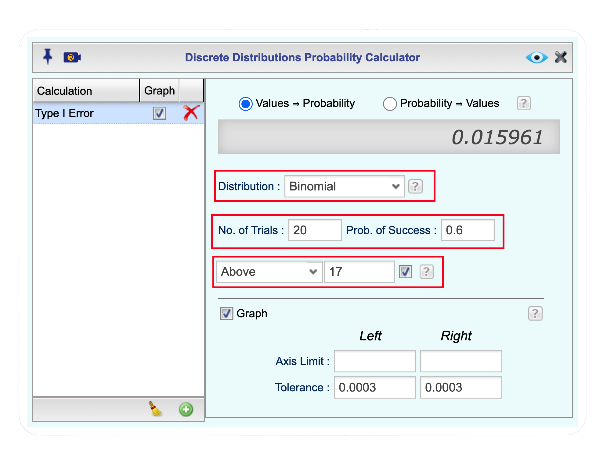
Figure 7.2 shows the Rguroo Probability Calculator output for \(X \sim \text{Binomial}(20, 0.60)\), giving
That is, if the true proportion of students in the district who use YouTube daily is \(p = 0.60\), and our decision rule is to reject \(H_0\) whenever \(X \geq 17\) in a sample of \(n = 20\) students, then there is only a \(1.6\%\) chance of committing a Type I error; that is, incorrectly concluding that more than 70% of students in the district use YouTube daily.
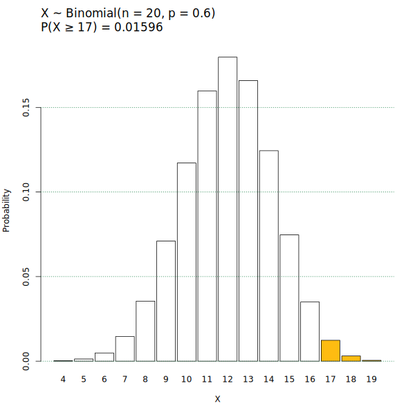
b. To compute the probability of Type I error for the critical region \(X \geq 17\) when \(p = 0.65\), we follow the same steps as in the Youtube Example, but enter 0.65 in the Prob. of Success box. The Rguroo output gives
That is, if the true proportion of students in the district who use YouTube daily is \(p = 0.65\), and our decision rule is to reject \(H_0\) whenever \(X \geq 17\) in a sample of \(n = 20\) students, then there is approximately a \(4.4\%\) chance of committing a Type I error; that is, incorrectly concluding that more than 70% of students in the district use YouTube daily.
c. Entering 0.70 in the Prob. of Success box gives
That is, if the true proportion of students in the district who use YouTube daily is \(p = 0.70\), and our decision rule is to reject \(H_0\) whenever \(X \geq 17\) in a sample of \(n = 20\) students, then there is approximately a \(10.7\%\) chance of committing a Type I error; that is, incorrectly concluding that more than 70% of students in the district use YouTube daily.
Example 7.8 (Physical Inactivity Among Adults (continued)) Recall Example 7.2 where a national health agency claimed that fewer than 35% of adults in its country are physically inactive, and a random sample of \(n = 50\) adults was selected. The null and alternative hypotheses are: \[ \begin{cases} H_0: p \geq 0.35 \\ H_a: p < 0.35 \end{cases} \]
Consider the critical region: Reject \(H_0\) if \(X \leq 13\).
For this critical region, compute \(P(\text{Type I error})\) when
- \(p = 0.35\)
- \(p = 0.40\)
- \(p = 0.50\).
In each case, interpret the probability in the context of the problem.
🔎 Solution
a. Since the sample size is \(n = 50\) and \(p = 0.35\), we have \(X \sim \text{Binomial}(50, 0.35)\). Using Rguroo’s probability calculator, we compute \[P(\text{Type I error}) = P(\text{Reject } H_0 \mid H_0 \text{ is true})\] \[= P(X \leq 13 \mid p = 0.35).\]
Click to expand the box below to see how to calculate the probability of Type I error.
- Open the Probability-Simulation toolbox in Rguroo.
- From the Probability dropdown, select Probability Calculator –> Discrete.
- (Optional) In the
Calculationtextbox, type a name for the calculation (e.g.,Type I error).
- In the Distribution dropdown, select Binomial.
- In the No. of Trials textbox, enter 50.
- In the Prob. of Success textbox, enter 0.35.
- In the next dropdown menu, select Below, and in the textbox next to it, enter 13.
- (Optional) Select the Graph checkbox to see a graph showing calculation details.
- Click the preview icon to see the result.
- (Optional) In the textbox, enter the name Type I Error Inactivity to save this calculation to your Rguroo account.
Click here to see the Rguroo dialog
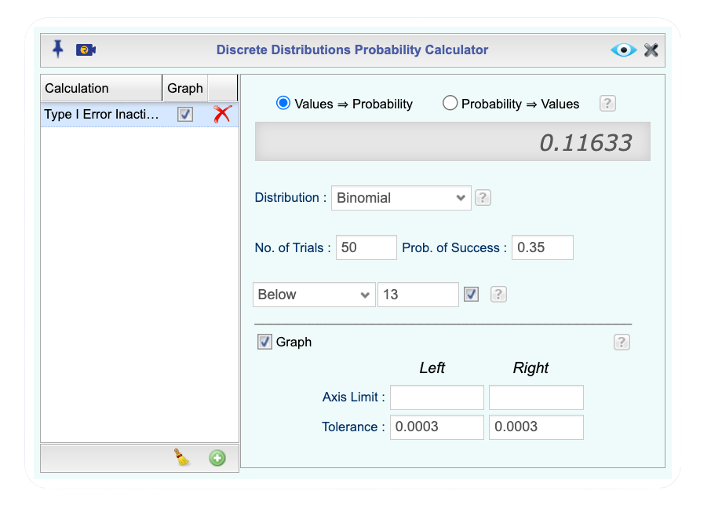
Figure 7.3 shows the Rguroo Probability Calculator output for \(X \sim \text{Binomial}(50, 0.35)\), giving
That is, if the true proportion of inactive adults in the population is \(p = 0.35\), and our decision rule is to reject \(H_0\) whenever \(X \leq 13\) in a sample of \(n = 50\) adults, then there is approximately an \(11.63\%\) chance of committing a Type I error; that is, incorrectly concluding that fewer than 35% of adults in the population are physically inactive.

b. Entering 0.40 in the Prob. of Success box gives
That is, if the true proportion of inactive adults in the population is \(p = 0.40\), and our decision rule is to reject \(H_0\) whenever \(X \leq 13\) in a sample of \(n = 50\) adults, then there is approximately a \(2.8\%\) chance of committing a Type I error; that is, incorrectly concluding that fewer than 35% of adults in the population are physically inactive.
c. Entering 0.50 in the Prob. of Success box gives
That is, if the true proportion of inactive adults in the population is \(p = 0.50\), and our decision rule is to reject \(H_0\) whenever \(X \leq 13\) in a sample of \(n = 50\) adults, then there is approximately a \(0.046\%\) chance of committing a Type I error; that is, incorrectly concluding that fewer than 35% of adults in the population are physically inactive.
🔎 Solution
Since \(H_0\) specifies only a single value \(p = 0.36\), we have \(X \sim \text{Binomial}(15, 0.36)\). The probability of Type I error is \[P(\text{Type I error}) = P(\text{Reject } H_0 \mid H_0 \text{ is true})\] \[= P(X \leq 3 \text{ or } X \geq 8 \mid p = 0.36).\]
Click to expand the box below to see how to calculate the probability of Type I error.
- Open the Probability-Simulation toolbox in Rguroo.
- From the Probability dropdown, select Probability Calculator –> Discrete.
- (Optional) In the
Calculationtextbox, type a name for the calculation (e.g.,Type I error).
- In the Distribution dropdown, select Binomial.
- In the No. of Trials textbox, enter 15.
- In the Prob. of Success textbox, enter 0.36.
- In the next dropdown menu, select Outside, and in the textboxes next to it, enter 3 and 8.
- (Optional) Select the Graph checkbox to see a graph showing calculation details.
- Click the preview icon to see the result.
- (Optional) In the textbox, enter the name Type I Error Social to save this calculation to your Rguroo account.
Click here to see the Rguroo dialog
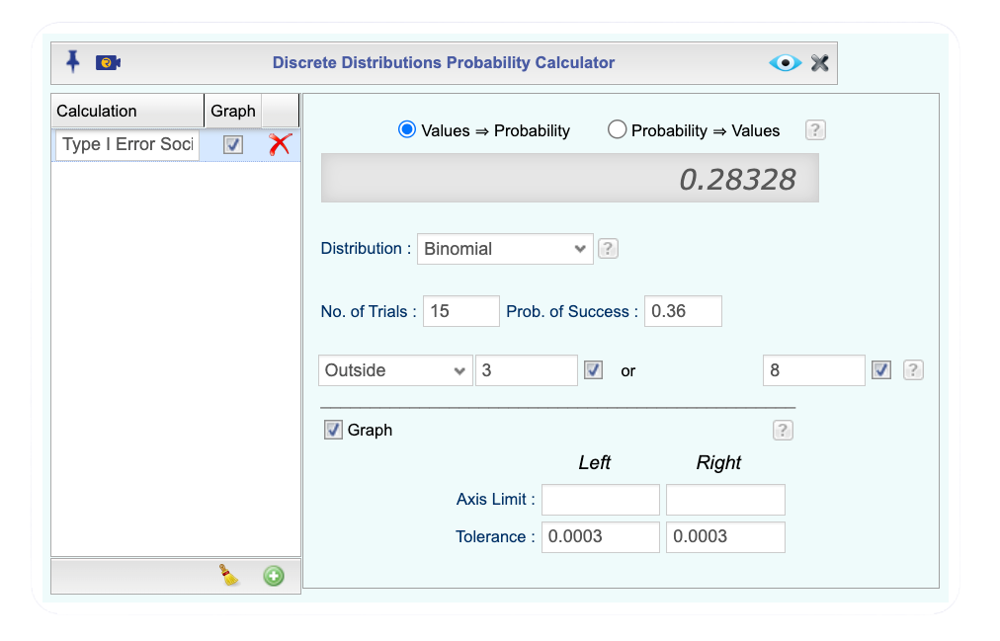
Figure 7.4 shows the Rguroo Probability Calculator output for \(X \sim \text{Binomial}(15, 0.36)\), giving
That is, if the true proportion of students who use social media as their primary news source is \(p = 0.36\), and our decision rule is to reject \(H_0\) whenever \(X \leq 3\) or \(X \geq 8\) in a sample of \(n = 15\) students, then there is approximately a \(28.33\%\) chance of committing a Type I error; that is, incorrectly concluding that the true proportion of students who use social media as their primary news source differs from 0.36.

Why the Boundary Value Matters
Now that we have computed the probability of a Type I error at various values of \(p\), let us look back at what we observed in our examples.
We begin with the two-sided case. In the Social Media News example, \(H_0\) specifies only a single value, \(p = 0.36\), so there is only one possible value at which the probability of a Type I error can be computed. There is nothing further to compare in this case.
For the one-sided cases, however, there are many values of \(p\) allowed by \(H_0\), and we computed the probability of a Type I error at several of them. You may have noticed a pattern: in both the YouTube example and the Physical Inactivity example, the probability of a Type I error was largest at the value of \(p\) where \(H_0\) and \(H_a\) meet. For the YouTube example, this is \(p = 0.70\), and for the Physical Inactivity example, this is \(p = 0.35\). We call this the boundary value of \(p\); it is the value that sits at the border between what \(H_0\) claims and what \(H_a\) claims. Is it a coincidence that the probability of a Type I error is largest at the boundary value?
It turns out that this is not a coincidence at all.
Key Result: Maximum Type I Error Occurs at the Boundary Value
For any fixed decision rule, the probability of a Type I error is largest when \(p\) equals the boundary value of \(H_0\). This holds regardless of the sample size or the specific critical region used.
Figure 7.5 confirms this result for our two one-sided examples, showing the probability of a Type I error across a range of values of \(p\) in \(H_0\), for three different decision rules in each case.
In panel (a), for the YouTube example, the null hypothesis is \(H_0: p \leq 0.70\), so the boundary value is \(p = 0.70\). The three curves correspond to the decision rules \(X \geq 16\), \(X \geq 17\), and \(X \geq 18\). For all three rules, the probability of a Type I error increases as \(p\) gets closer to the boundary value of \(0.70\), and reaches its maximum at \(p = 0.70\). In panel (b), for the Physical Inactivity example, the null hypothesis is \(H_0: p \geq 0.35\), so the boundary value is \(p = 0.35\). The three curves correspond to the decision rules \(X \leq 11\), \(X \leq 12\), and \(X \leq 13\). Again, for all three rules, the probability of a Type I error is largest at the boundary value \(p = 0.35\) and decreases as \(p\) moves away from it.
Notice also that the horizontal dashed red line in each panel is drawn at \(0.05\). This will become important shortly, as it represents a commonly chosen upper bound for the probability of a Type I error.

7.3.2 Choosing a Critical Region for a Given \(\alpha\)
As noted earlier in Section 7.3, statisticians control the probability of a Type I error when making decisions in hypothesis testing. This probability, however, varies depending on which value of \(p\) in the null hypothesis we consider. A key finding from our examples is that the maximum probability of a Type I error always occurs at the boundary value of \(p\). This is an important result: it means that if we control the probability of a Type I error at the boundary value, we are automatically controlling it for all other values of \(p\) in the null hypothesis. This is the conservative and safe approach that statisticians adopt.
The maximum probability of a Type I error, that is, the probability of a Type I error evaluated at the boundary value of \(p\), is called the significance level of the test, and is denoted by \(\alpha\) (the Greek letter alpha). It represents the highest tolerable chance of making a Type I error. The most commonly used value is \(\alpha = 0.05\), meaning we are willing to tolerate at most a 5% chance of incorrectly rejecting a true null hypothesis. Values of \(\alpha = 0.10\) and \(\alpha = 0.01\) are also used. The smaller the significance level, the more conservative we are; that is, the less willing we are to risk a Type I error.
A second key observation from Figure 7.5 is that the probability of a Type I error depends on the decision rule we choose. This is important for our decision making: it means we have control over the probability of a Type I error by carefully selecting our decision rule. Specifically, our goal is to choose a decision rule whose probability of a Type I error at the boundary value does not exceed our chosen significance level \(\alpha\). In other words, looking at Figure 7.5, we want the curve for our chosen decision rule to stay at or below the horizontal red dashed line at the boundary value.
For the YouTube example, panel (a) of Figure 7.5 shows that the decision rule \(X \geq 18\) has a probability of Type I error at the boundary value \(p = 0.70\) that is less than \(0.05\), while the decision rule \(X \geq 17\) exceeds \(0.05\) at the boundary. Therefore, at significance level \(\alpha = 0.05\), we choose the critical region \(X \geq 18\). This means that if we observe 18 or more students in our sample of \(n = 20\) who report daily YouTube use, we reject \(H_0\) in favor of \(H_a: p > 0.70\).
You might reasonably ask: why not also reject \(H_0\) when \(X = 17\) or \(X = 16\), since these correspond to sample proportions of \(\hat{p} = 0.85\) and \(\hat{p} = 0.80\), both of which are also larger than \(0.70\)? The answer lies in our significance level criterion. Even though these sample proportions are greater than \(0.70\), the decision rules \(X \geq 16\) and \(X \geq 17\) produce a probability of Type I error at the boundary value \(p = 0.70\) that exceeds \(\alpha = 0.05\), as seen in panel (a) of fig-type-range. They do not meet our significance level criterion, so we do not use them.
You might then ask the opposite question: why not use an even stricter decision rule, such as \(X \geq 19\)? The answer brings us back to the trade-off between Type I and Type II errors. Recall that when the probability of a Type I error decreases, the probability of a Type II error increases. By requiring \(X \geq 19\) instead of \(X \geq 18\), we make it harder to reject \(H_0\), increasing our chance of a Type II error. For this reason, among all decision rules that satisfy our significance level criterion, we always choose the one that gives us the largest critical region; that is, the rule that rejects \(H_0\) for the most values of \(X\) while still keeping the probability of a Type I error at or below \(\alpha\). This ensures that we minimize the probability of a Type II error while still controlling the probability of a Type I error at our chosen ignificance level.
The same reasoning applies to the Physical Inactivity example. Panel (b) of Figure 7.5 shows that the decision rule \(X \leq 11\) has a probability of Type I error at the boundary value \(p = 0.35\) that is less than \(0.05\), while the decision rules \(X \leq 12\) and \(X \leq 13\) exceed \(0.05\) at the boundary, and \(X \leq 10\) would satisfy the criterion but at the cost of a larger Type II error. Therefore, \(X \leq 11\) is the optimal choice at \(\alpha = 0.05\); it is the largest critical region that keeps the probability of a Type I error at or below \(\alpha\) while minimizing the probability of a Type II error. This means that if we observe 11 or fewer inactive adults in our sample of \(n = 50\), we reject \(H_0\) in favor of \(H_a: p < 0.35\).
The decision rule for two-sided tests follows the same logic, but since the critical region has the more complex form \(X \leq c_1\) or \(X \geq c_2\), we will rely on software to determine the appropriate values of \(c_1\) and \(c_2\) for us.
Choosing the Critical Region
At significance level \(\alpha\), the critical region is the largest set of values of \(X\) consistent with \(H_a\) such that the probability of a Type I error at the boundary value of \(p\) in \(H_0\) does not exceed \(\alpha\). Specifically:
- If \(H_a: p > p_0\), choose the largest \(c\) such that \(P(X \geq c \mid p = p_0) \leq \alpha\).
- If \(H_a: p < p_0\), choose the smallest \(c\) such that \(P(X \leq c \mid p = p_0) \leq \alpha\).
- If \(H_a: p \neq p_0\), choose \(c_1\) and \(c_2\) such that \(P(X \leq c_1 \mid p = p_0) + P(X \geq c_2 \mid p = p_0) \leq \alpha\), with \(\alpha/2\) allocated to each tail.
Using Inverse Probability to Find the Critical Region
While we could determine the critical region that satisfies our significance level by trial and error, testing different decision rules one at a time as we did above, there is a more direct approach. We can use what is called an inverse probability function. Rather than providing a value of \(X\) and asking for the corresponding probability, an inverse probability function works in reverse: we provide a probability and it returns the corresponding value of \(X\).
To find the critical region, we use the binomial distribution with the boundary value of \(p\) in \(H_0\) as the probability of success and \(n\) as the number of trials, and we provide the significance level \(\alpha\) as the probability. The inverse probability function then returns the value of \(X\) that defines our critical region. Below, we show how this is done in Rguroo using its built-in probability calculator.
Example 7.10 (YouTube Use: Finding the Critical Region) In the YouTube Use example (Example 7.1), we are testing \(H_0: p \leq 0.70\) versus \(H_a: p > 0.70\), where \(p\) is the true proportion of students in the district who use YouTube daily. Using a sample of \(n = 20\) students and a significance level of \(\alpha = 0.05\), find the critical region for this test.
Example 7.11 (Physical Inactivity: Finding the Critical Region) In the Physical Inactivity example (Example 7.5), we are testing \(H_0: p \geq 0.35\) versus \(H_a: p < 0.35\), where \(p\) is the true proportion of adults in the population who are physically inactive. Using a sample of \(n = 50\) adults and a significance level of \(\alpha = 0.05\), find the critical region for this test.
Now that we have determined the critical regions for our three examples, we can use them to make decisions based on observed sample data. Recall that the decision rule is simple: if \(x_{obs}\) falls in the critical region, we reject \(H_0\); otherwise, we fail to reject \(H_0\).
Example 7.13 (YouTube Use: Making a Decision) In the YouTube Use example (Example 7.1), we are testing \(H_0: p \leq 0.70\) versus \(H_a: p > 0.70\), where \(p\) is the true proportion of students in the district who use YouTube daily, using a sample of \(n = 20\) students and a significance level of \(\alpha = 0.05\).
- Suppose the observed number of students who report daily YouTube use is \(x_{obs} = 17\). Make a decision and interpret it in the context of the problem.
- Suppose instead that \(x_{obs} = 19\). Make a decision and interpret it in the context of the problem.
Example 7.14 (Physical Inactivity: Making a Decision) In the Physical Inactivity example (Example 7.2), we are testing \(H_0: p \geq 0.35\) versus \(H_a: p < 0.35\), where \(p\) is the true proportion of adults in the population who are physically inactive, using a sample of \(n = 50\) adults and a significance level of \(\alpha = 0.05\).
- Suppose the observed number of inactive adults is \(x_{obs} = 14\). Make a decision and interpret it in the context of the problem.
- Suppose instead that \(x_{obs} = 10\). Make a decision and interpret it in the context of the problem.
Section Summary
- The critical region is the set of values of \(X\) for which we reject \(H_0\). Its form depends on the direction of \(H_a\).
- The probability of a Type I error is computed at a value of \(p\) allowed by \(H_0\), using the binomial distribution.
- For one-sided tests, the maximum probability of a Type I error always occurs at the boundary value of \(p\) in \(H_0\).
- The significance level \(\alpha\) is the maximum tolerable probability of a Type I error, evaluated at the boundary value.
- We choose the largest critical region whose Type I error probability at the boundary does not exceed \(\alpha\), thereby minimizing the chance of a Type II error.
- Once the critical region is determined, we compare the observed value \(x_{obs}\) to it: if \(x_{obs}\) falls in the critical region we reject \(H_0\); otherwise we fail to reject \(H_0\). Failing to reject \(H_0\) does not mean \(H_0\) is true; it simply means the data did not provide sufficient evidence to reject it.
7.3.3 Homework for Section Section 7.3
For each of the scenarios described in Problems 1–7 of Section 7.2.3, answer the following:
- Write the null and alternative hypotheses using mathematical notation.
- Use Rguroo’s Probability Calculator to find the critical region at the given significance level.
- Does \(x_{\text{obs}}\) fall in the critical region? Based on this, state your decision and write a sentence interpreting your conclusion in the context of the problem.
Arizona Marijuana Legalization In Problem 1 (Arizona Marijuana Legalization) of Section 7.2.3, \(p\) is the true proportion of Arizona registered voters who support marijuana legalization. Do Arizona registered voters differ from Colorado residents in their support for marijuana legalization? The sample consisted of \(n = 779\) voters, of whom \(x_{\text{obs}} = 390\) favored legalization. Use \(\alpha = 0.05\).
Australian Unemployment Outlook In Problem 2 (Australian Unemployment Outlook) of Section 7.2.3, \(p\) is the true proportion of Australians in November 1997 who believed unemployment would increase. Did Australian sentiment about unemployment shift between July and November of 1997? The sample consisted of \(n = 631\) Australians, of whom \(x_{\text{obs}} = 284\) believed unemployment would increase. Use \(\alpha = 0.05\).
Arkansas Identity Theft Complaints In Problem 3 (Arkansas Identity Theft Complaints) of Section 7.2.3, \(p\) is the true proportion of consumer complaints in Arkansas that were for identity theft. Was the proportion of identity theft complaints in Arkansas greater than the national figure of 23%? The sample consisted of \(n = 3{,}482\) complaints, of which \(x_{\text{obs}} = 1{,}601\) were for identity theft. Use \(\alpha = 0.01\).
Alaska Identity Theft Complaints In Problem 4 (Alaska Identity Theft Complaints) of Section 7.2.3, \(p\) is the true proportion of consumer complaints in Alaska that were for identity theft. Was Alaska’s proportion of identity theft complaints less than the national proportion of 23%? The sample consisted of \(n = 1{,}432\) complaints, of which \(x_{\text{obs}} = 321\) were for identity theft. Use \(\alpha = 0.05\).
Kennedy Assassination Conspiracy Belief In Problem 5 (Kennedy Assassination Conspiracy Belief) of Section 7.2.3, \(p\) is the true proportion of American adults in 2013 who believed there was a conspiracy behind President Kennedy’s assassination. Is there evidence that American belief in a conspiracy behind President Kennedy’s assassination changed between 2001 and 2013? The sample consisted of \(n = 1{,}039\) adults, of whom \(x_{\text{obs}} = 634\) believed in a conspiracy. Use \(\alpha = 0.05\).
Autism Spectrum Disorder in Arizona In Problem 6 (Autism Spectrum Disorder in Arizona) of Section 7.2.3, \(p\) is the true proportion of children in Arizona diagnosed with ASD. Is the rate of ASD diagnosis among children in Arizona greater than the national rate of 1 in 88 children? The sample consisted of \(n = 32{,}601\) children, of whom \(x_{\text{obs}} = 507\) were diagnosed with ASD. Use \(\alpha = 0.05\).
Graduate Degree Attainment: GSS2024 In Problem 7 (Graduate Degree Attainment: GSS2024) of Section 7.2.3, \(p\) is the true proportion of U.S. adults who hold a graduate degree. Does the GSS2024 data provide evidence that the proportion of U.S. adults who hold a graduate degree differs from the 15% reported by the U.S. Census Bureau? The sample consisted of \(n = 388\) adults, of whom \(x_{\text{obs}} = 33\) reported a graduate degree as their highest level of education. Use \(\alpha = 0.05\).
7.4 The p-Value Approach to Hypothesis Testing
In the previous section, we determined the critical region by finding the values of \(X\), the number of observations in the sample with the characteristic of interest, that keep the probability of a Type I error at or below the significance level \(\alpha\), and we made our decision by checking whether \(x_{obs}\) falls in the critical region. In this section, we introduce an alternative approach, the p-value approach, which is widely used in practice and is the default output of most statistical software, including Rguroo.
In the p-value approach, we calculate a probability using the observed value \(x_{obs}\), called the p-value. The p-value tells us how unusual the observed sample result is under the assumption that the null hypothesis \(H_0\) is true. Smaller p-values indicate stronger evidence against \(H_0\) and, therefore, stronger support for the alternative hypothesis \(H_a\). We use the p-value to decide whether to reject or fail to reject the null hypothesis at a given significance level \(\alpha\).
Defining the p-Value
Let \(X\) denote the number of observations in the sample with the characteristic of interest, and let \(x_{obs}\) denote its observed value. We define the \(H_a\) support as the set of values of \(X\) that are at least as supportive of \(H_a\) as the observed value \(x_{obs}\).
Then, the p-value is defined as
In words, the p-value is the probability, assuming that \(H_0\) is true, of obtaining a value of the test statistic \(X\) that is at least as supportive of \(H_a\) as the observed value \(x_{obs}\).
In all cases, the p-value is computed at the boundary value of \(p\) in \(H_0\). Recall from Section 7.3.1 that the boundary value is the value of \(p\) where \(H_0\) and \(H_a\) meet; we denote it by \(p_0\). We use the boundary value for the same reason as before: it is the value of \(p\) in \(H_0\) that gives the maximum probability of a Type I error. Therefore, throughout the three cases below, \(p_0\) always refers to this boundary value.
What counts as “at least as supportive of \(H_a\) as \(x_{obs}\)” depends on the form of the alternative hypothesis.
Case 1: \(H_a: p > p_0\) (e.g., \(H_a: p > 0.70\))
Larger values of \(X\) are more supportive of \(H_a\). The \(H_a\) support consists of \(x_{obs}\) and all values larger than \(x_{obs}\), so the p-value is \[ \text{p-value} = P(X \geq x_{obs} \mid p = p_0). \]
To understand Case 1, note that a larger value of \(X\) means more observations in the sample have the characteristic of interest, which corresponds to a higher sample proportion \(\hat{p}\). A higher sample proportion is less consistent with \(H_0\) and more supportive of the claim that the true population proportion exceeds \(p_0\), which is exactly what \(H_a\) states.
Case 2: \(H_a: p < p_0\) (e.g., \(H_a: p < 0.35\))
Smaller values of \(X\) are more supportive of \(H_a\). The \(H_a\) support consists of \(x_{obs}\) and all values smaller than \(x_{obs}\), so the p-value is \[ \text{p-value} = P(X \leq x_{obs} \mid p = p_0). \]
To understand Case 2, note that a smaller value of \(X\) means fewer observations in the sample have the characteristic of interest, which corresponds to a lower sample proportion \(\hat{p}\). A lower sample proportion is less consistent with \(H_0\) and more supportive of the claim that the true population proportion is less than \(p_0\), which is exactly what \(H_a\) states.
Case 3: \(H_a: p \neq p_0\) (e.g., \(H_a: p \neq 0.36\))
A value \(x\) is in the \(H_a\) support if it is at least as unlikely as the observed value \(x_{obs}\) under \(H_0\). That is, \[ P(X = x \mid p = p_0) \leq P(X = x_{obs} \mid p = p_0). \]
These values may occur in either tail of the distribution, since values far from \(p_0\) in either direction are less consistent with \(H_0\). The \(H_a\) support consists of \(x_{obs}\) and all such values \(x\), so the p-value is \[ \text{p-value} = P(X \text{ is a value in the } H_a \text{ support} \mid p = p_0). \]
To understand Case 3, consider the probability of the observed value \(x_{obs}\) under the assumption that \(H_0\) is true, namely \(P(X = x_{obs} \mid p = p_0)\). Any other value \(x\) that is equally likely or less likely than \(x_{obs}\) under \(H_0\) is considered at least as supportive of \(H_a\) as \(x_{obs}\). Such values can occur in either tail of the distribution: they may correspond to a sample proportion much higher than \(p_0\), or much lower than \(p_0\). In both cases, they represent outcomes that would be at least as surprising as \(x_{obs}\) if \(H_0\) were true, and therefore provide stronger evidence against \(H_0\).
The Decision Rule
The decision rule using the p-value is straightforward:
Decision Rule Using the p-Value
\[ \text{If p-value} \leq \alpha, \text{ reject } H_0. \qquad \text{If p-value} > \alpha, \text{ fail to reject } H_0. \]
The reasoning behind this rule is simple: a small p-value means that the observed value \(x_{obs}\) and values at least as supportive of \(H_a\) would be unlikely to occur if \(H_0\) were true. If this probability is small enough; that is, at or below our chosen significance level \(\alpha\), we take it as sufficient evidence to reject \(H_0\). Conversely, a large p-value means that the observed result is not surprising under \(H_0\), and we do not have sufficient evidence to reject it.
This rule is equivalent to the critical region approach. Specifically, the following three statements are always equivalent:
- The p-value is less than or equal to \(\alpha\).
- The \(H_a\) support is contained in the critical region.
- \(x_{obs}\) falls in the critical region.
This means that the p-value approach and the critical region approach always lead to the same conclusion. The p-value approach has the added advantage of telling us not just whether to reject \(H_0\), but also how strong the evidence against \(H_0\) is. A very small p-value indicates very strong evidence against \(H_0\), while a p-value just below \(\alpha\) indicates borderline evidence.
Computing the p-Value and Making a Decision: One-Sided Examples
We now illustrate how to compute the p-value and use it to make a decision, starting with the two one-sided examples that we have seen.
Example 7.16 (YouTube Use: Computing the p-Value and Making a Decision) In the YouTube Use example (Example 7.1), we are testing \(H_0: p \leq 0.70\) versus \(H_a: p > 0.70\), where \(p\) is the true proportion of students in the district who use YouTube daily. A random sample of \(n = 20\) students is selected and \(x_{obs} = 17\) report daily YouTube use.
- Obtain the \(H_a\) support.
- Compute the p-value.
- At significance level \(\alpha = 0.05\), make a decision and state your conclusion in the context of the problem.
Example 7.17 (Physical Inactivity: Computing the p-Value and Making a Decision) In the Physical Inactivity example (Example 7.2), we are testing \(H_0: p \geq 0.35\) versus \(H_a: p < 0.35\), where \(p\) is the true proportion of adults in the population who are physically inactive. A random sample of \(n = 50\) adults is selected and \(x_{obs} = 10\) are found to be physically inactive.
- Obtain the \(H_a\) support.
- Compute the p-value.
- At significance level \(\alpha = 0.05\), make a decision and state your conclusion in the context of the problem.
Computing the p-Value and Making a Decision: The Two-Sided Case
The two-sided case requires a bit more care. Since \(H_a: p \neq p_0\) does not specify a direction, evidence against \(H_0\) can come from either tail of the distribution. Recall from Case 3 that a value \(x\) is in the \(H_a\) support if \(P(X = x \mid p = p_0) \leq P(X = x_{obs} \mid p = p_0)\), that is, if it is at least as unlikely as \(x_{obs}\) under \(H_0\).
7.4.1 Homework for Section Section 7.4
For each of the scenarios described in Problems 1–7 of Section 7.2.3, answer the following:
- Obtain the \(H_a\) support.
- Use Rguroo’s Probability Calculator to compute the p-value.
- At the given significance level, make a decision and state your conclusion in the context of the problem.
Arizona Marijuana Legalization In Problem 1 (Arizona Marijuana Legalization) of Section 7.2.3, \(p\) is the true proportion of Arizona registered voters who support marijuana legalization. Do Arizona registered voters differ from Colorado residents in their support for marijuana legalization? The sample consisted of \(n = 779\) voters, of whom \(x_{\text{obs}} = 390\) favored legalization. Use \(\alpha = 0.05\).
Australian Unemployment Outlook In Problem 2 (Australian Unemployment Outlook) of Section 7.2.3, \(p\) is the true proportion of Australians in November 1997 who believed unemployment would increase. Did Australian sentiment about unemployment shift between July and November of 1997? The sample consisted of \(n = 631\) Australians, of whom \(x_{\text{obs}} = 284\) believed unemployment would increase. Use \(\alpha = 0.05\).
Arkansas Identity Theft Complaints In Problem 3 (Arkansas Identity Theft Complaints) of Section 7.2.3, \(p\) is the true proportion of consumer complaints in Arkansas that were for identity theft. Was the proportion of identity theft complaints in Arkansas greater than the national figure of 23%? The sample consisted of \(n = 3{,}482\) complaints, of which \(x_{\text{obs}} = 1{,}601\) were for identity theft. Use \(\alpha = 0.05\).
Alaska Identity Theft Complaints In Problem 4 (Alaska Identity Theft Complaints) of Section 7.2.3, \(p\) is the true proportion of consumer complaints in Alaska that were for identity theft. Was Alaska’s proportion of identity theft complaints less than the national proportion of 23%? The sample consisted of \(n = 1{,}432\) complaints, of which \(x_{\text{obs}} = 321\) were for identity theft. Use \(\alpha = 0.01\).
Kennedy Assassination Conspiracy Belief In Problem 5 (Kennedy Assassination Conspiracy Belief) of Section 7.2.3, \(p\) is the true proportion of American adults in 2013 who believed there was a conspiracy behind President Kennedy’s assassination. Is there evidence that American belief in a conspiracy behind President Kennedy’s assassination changed between 2001 and 2013? The sample consisted of \(n = 1{,}039\) adults, of whom \(x_{\text{obs}} = 634\) believed in a conspiracy. Use \(\alpha = 0.05\).
Autism Spectrum Disorder in Arizona In Problem 6 (Autism Spectrum Disorder in Arizona) of Section 7.2.3, \(p\) is the true proportion of children in Arizona diagnosed with ASD. Is the rate of ASD diagnosis among children in Arizona greater than the national rate of 1 in 88 children? The sample consisted of \(n = 32{,}601\) children, of whom \(x_{\text{obs}} = 507\) were diagnosed with ASD. Use \(\alpha = 0.05\).
Graduate Degree Attainment: GSS2024 In Problem 7 (Graduate Degree Attainment: GSS2024) of Section 7.2.3, \(p\) is the true proportion of U.S. adults who hold a graduate degree. Does the GSS2024 data provide evidence that the proportion of U.S. adults who hold a graduate degree differs from the 15% reported by the U.S. Census Bureau? The sample consisted of \(n = 388\) adults, of whom \(x_{\text{obs}} = 33\) reported a graduate degree as their highest level of education. Use \(\alpha = 0.05\).
7.5 Using Rguroo for One-Population Proportion Hypothesis Tests
In the previous sections, we built up the ideas of hypothesis testing step by step: we identified the null and alternative hypotheses, computed Type I error probabilities, determined critical regions, and calculated p-values using the binomial distribution. Now that we understand the underlying logic of hypothesis testing, we can use Rguroo’s One-Population Proportion inference function to carry out a complete hypothesis test in a single step. By entering the sample size, the hypothesized value \(p_0\), and the observed count \(x_{\text{obs}}\), Rguroo automatically produces all the information needed to reach a conclusion.
We illustrate this using the same three examples from this chapter.
Example 7.19 (Daily YouTube Use Among Teens (continued)) Recall Example 7.1. A school district claims that more than 70% of students in its district use YouTube daily. A random sample of \(n = 20\) students is selected, and \(x_{\text{obs}} = 17\) of them report daily YouTube use. The hypotheses are: \[ \begin{cases} H_0: p \leq 0.70 \\ H_a: p > 0.70 \end{cases} \]
Use Rguroo’s One-Population Proportion inference function to carry out the hypothesis test at significance level \(\alpha = 0.05\), and interpret the results.
🔎 Solution
We test \(H_0: p \leq 0.70\) versus \(H_a: p > 0.70\) at significance level \(\alpha = 0.05\), where \(p\) is the true proportion of students in the district who use YouTube daily. Our sample of \(n = 20\) students yielded \(x_{\text{obs}} = 17\) daily users, giving an observed sample proportion of \(\hat{p} = 17/20 = 0.85\). Since \(\hat{p} = 0.85 > 0.70\), the sample result is in the direction of \(H_a\). We now use Rguroo to determine whether this result is statistically significant.
Click to expand the box below to see how to use the Proportion Inference function in Rguroo to answer this question.
Open the Analytics toolbox in Rguroo.
From the Analysis dropdown, select Proportion Inference → One Population. This opens the One Population Proportion Inference dialog.
In the Data section of the dialog, enter the following:
- In the Factor Label textbox, type a label for the categorical variable. In Rguroo, a “factor” refers to a categorical variable. For this example, enter Daily YouTube Use.
- In the Success Label textbox, type Yes. A success corresponds to a student who uses YouTube daily.
- In the Failure Label textbox, type No.
- In the Sample Size textbox, type 20.
- In the # of Successes textbox, type 17.
In the Test of Hypothesis section of the dialog, enter the following:
- In the Alternative Hyp. p dropdown, select > and enter 0.7.
- Select the Binomial checkbox to use the binomial distribution.
- Leave the Significance Level textbox at the default value of 0.05.
(Optional) Click the button to open the Advanced Features dialog.
- Open the Confidence Interval and Test of Hypothesis.
- In the Graphs section, select both P-Value and Critical Region. The default is P-Value; selecting Critical Region will also display the critical region.
Click the preview icon
to view the output.Click the
button and save the result as YoutubeProp.
Rguroo One-Population Proportion dialogs
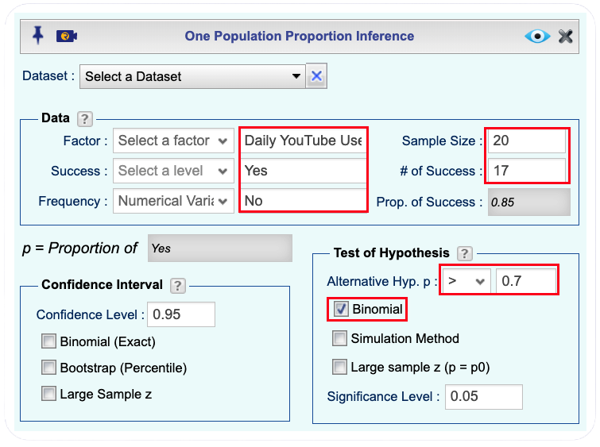
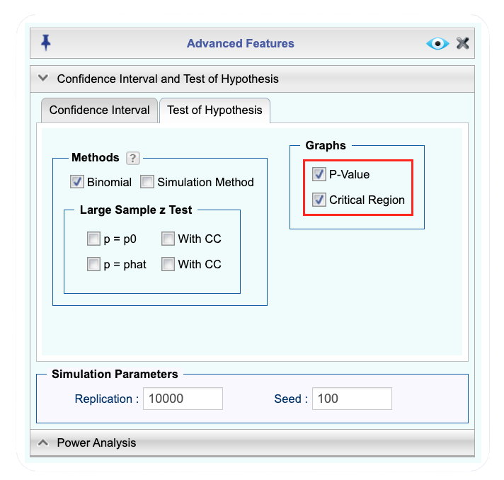
Click to expand the box below to see the Rguroo output.
Rguroo output: One-Population Proportion Inference - YouTube
The Rguroo output reports a p-value of approximately \(0.1071\) and a critical region of \(X \geq 18\). Since the p-value \(0.1071 > \alpha = 0.05\), we fail to reject \(H_0\). Expanding the output above also shows the p-value graph and the critical region graph, the observed value \(x_{\text{obs}} = 17\) does not fall in the critical region, which is consistent with our decision. The data do not provide sufficient evidence at the 5% ignificance level to conclude that more than 70% of students in the district use YouTube daily.
Example 7.20 (Physical Inactivity Among Adults (continued)) Recall Example 7.2. A national health agency hopes that fewer than 35% of adults in its country are physically inactive. A random sample of \(n = 50\) adults is selected, and \(x_{\text{obs}} = 10\) are found to be physically inactive. The hypotheses are: \[ \begin{cases} H_0: p \geq 0.35 \\ H_a: p < 0.35 \end{cases} \]
Use Rguroo’s One-Population Proportion inference function to carry out the hypothesis test at significance level \(\alpha = 0.05\), and interpret the results.
Using Raw Data
So far, we have performed proportion inference using a summary of the sample, namely the sample size \(n\) and the observed count \(x_{obs}\). In practice, however, we often work directly with a raw dataset rather than a pre-computed summary. Now, we show how to perform proportion inference from raw data using Rguroo.
We illustrate this using data from the General Social Survey (GSS), one of the longest-running and most widely used surveys in the United States. Conducted by NORC at the University of Chicago, the GSS has collected data on the attitudes, behaviors, and characteristics of American adults since 1972, covering topics such as social values, political views, religion, and lifestyle. The dataset that we use here, GSS2024, is a subset of the 2024 GSS data. After removing observations with missing values, the dataset contains \(n = 399\) respondents. One of the variables included is Grass, which records each respondent’s opinion on whether marijuana should be made legal, with two possible responses: Yes (supports legalization) or No (does not support legalization).
Example 7.22 (Marijuana Legalization: Testing a Claim Using Raw Data) The GSS2024 dataset contains responses from \(n = 399\) adults in the United States. The variable Grass records whether each respondent supports the legalization of marijuana, with possible responses of Yes (supports legalization) or No (does not support legalization). A researcher claims that more than 70% of American adults support the legalization of marijuana.
- State the null and alternative hypotheses.
- Using the GSS2024 dataset and Rguroo’s Proportion Inference function, obtain the critical region at significance level \(\alpha = 0.05\).
- Compute the p-value and use it to make a decision at significance level \(\alpha = 0.05\).
- State your conclusion in the context of the problem.
 The dataset for this example is available in the Rguroo dataset repository Kozak, with the dataset name GSS2004. Table Table 7.1 displays the first six rows of the dataset. A complete description of the variables is provided in the dataset code book that follows.
The dataset for this example is available in the Rguroo dataset repository Kozak, with the dataset name GSS2004. Table Table 7.1 displays the first six rows of the dataset. A complete description of the variables is provided in the dataset code book that follows.
| X | age | Sex | Degree | Race | Grass | Life | Tax | Mode |
|---|---|---|---|---|---|---|---|---|
| 1 | 30 | Female | HS | White | Yes | Very satisfied | High | In Person |
| 2 | 64 | Male | Bachelor | White | Yes | Pretty satisfied | High | Phone |
| 3 | 73 | Female | Graduate | White | Yes | Pretty satisfied | High | In Person |
| 4 | 74 | Female | JC | White | Yes | Pretty satisfied | High | In Person |
| 5 | 56 | Female | JC | White | No | Very satisfied | High | In Person |
| 6 | 57 | Female | No HS | Other | Yes | Pretty satisfied | OK | In Person |
Code book for Dataset GSS2024
Dataset Name: GSS2024
This dataset is a subset of the 2024 General Social Survey (GSS) data, obtained from NORC at the University of Chicago. After removing observations with missing values, the dataset contains \(n = 399\) individuals.
The variables included in this dataset are described below.
Age: Age of the respondent (in years).
Sex: Sex of the respondent
- Male
- Female
Degree: Highest degree earned by the respondent.
- No HS (Less than high school)
- HS (High school)
- JC (Junior college)
- Bachelor (Bachelor’s degree)
- Graduate (Graduate degree)
Race: Race of the respondent
- White
- Black
- Other
Grass: Respondent’s opinion on whether marijuana should be made legal
- Yes (supports legalization)
- No (does not support legalization)
Life: Respondent’s general satisfaction with life
- Very satisfied
- Pretty satisfied
- Not too satisfied
Tax: Respondent’s opinion on whether taxes are too high
- High (Too high)
- OK (About right)
- Low (Too low)
Mode: Mode of data collection
- In-person
- Phone
- Web
Source
Smith, T. W., Davern, M., Freese, J., & Morgan, S. L. General Social Survey, 1972–2024. NORC at the University of Chicago. https://gss.norc.org
🔎 Solution
Click to expand the box below to see how to use the Proportion Inference function in Rguroo to answer this question.
Before you begin: Make sure you have already imported the GSS2024 dataset into your Rguroo account, as shown here.
Open the Analytics toolbox in Rguroo.
From the Analysis dropdown, select Proportion Inference → One Population. This opens the One Population Proportion Inference dialog.
Drom the Dataset dropdown select the dataset GSS2024.
From the Factor dropdown select the categorical variable Grass.
(Optional) In the Factor Label textbox type in Legalize Marijuana. The label is usually a more descriptive version of the variable name.
From the Success dropdown select Yes. This indicates those who agree with legalization of marijuana.(Once you select these values, the sample soze, number of successes and proportion of successes will be poplated automatically on the dialog)
In the Test of Hypothesis section of the dialog, enter the following:
- In the Alternative Hyp. p dropdown, select > and enter 0.7.
- Select the Binomial checkbox to use the binomial distribution.
- Leave the Significance Level textbox at the default value of 0.05.
(Optional) Click the button to open the Advanced Features dialog.
- Open the Confidence Interval and Test of Hypothesis.
- In the Graphs section, select both P-Value and Critical Region. The default is P-Value; selecting Critical Region will also display the critical region.
Click the preview icon
to view the output.Click the
button and save the result as GSS2024Prop.
Rguroo One-Population Proportion dialogs
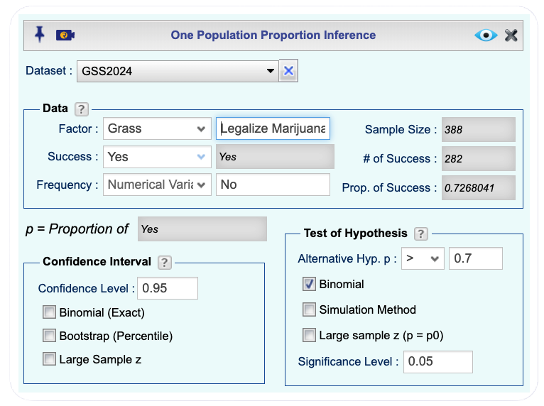
0.7, using the binomial method and a significance level of 0.05. The confidence interval section shows a 95% level with options for binomial, bootstrap, and large sample methods.">Click to expand the box below to see the Rguroo output.
Rguroo output: One-Population Proportion Inference - Marijuana Legalization Example
The null and alternative hypotheses are: \[ \begin{cases} H_0: p \leq 0.70 \\ H_a: p > 0.70 \end{cases} \] where \(p\) is the true proportion of American adults who support the legalization of marijuana.
From the Rguroo output shown in Figure 7.20, the data summary shows that out of \(n = 388\) respondents, \(x_{obs} = 282\) answered Yes, giving a sample proportion of \(\hat{p}_{obs} = 0.7268\). The critical region at significance level \(\alpha = 0.05\) is \(X \geq 287,\) with an exact significance level of \(4.799\%\) which is less than 5%. That is, we would reject \(H_0\) if in a sample of size 388, 287 or more respondents support legalization.

- From the Rguroo output shown in Figure 7.21, the p-value is
\[\text{p-value} = P(X \geq 282 \mid p = 0.70) \approx 0.136.\]

- Since the p-value \(0.136 > \alpha = 0.05\), we fail to reject \(H_0\). This is consistent with the critical region approach: \(x_{obs} = 282\) does not fall in the critical region \(X \geq 287\). The data do not provide sufficient evidence at the 5% significance level to conclude that more than 70% of American adults support the legalization of marijuana, even though the sample proportion of \(\hat{p}_{obs} = 0.7268\) is slightly above 0.70.
7.5.1 Homework for Section Section 7.5
For each of the scenarios described in Problems 1–7 of Section 7.2.3, use Rguroo’s One-Population Proportion inference function with the Binomial option to carry out the hypothesis test at the given significance level. Before running the analysis, identify the following inputs for the Rguroo dialog:
- Factor Label: A descriptive name for the variable being studied
- Success: The outcome that counts as a success
- Failure: The outcome that counts as a failure
- Sample Size: The value of \(n\)
- # of Successes: The value of \(x_{\text{obs}}\)
- Proportion of …: The label describing what the proportion represents
Then carry out the test, report Rguroo’s p-value, and interpret the results.
Arizona Marijuana Legalization In Problem 1 (Arizona Marijuana Legalization) of Section 7.2.3, \(p\) is the true proportion of Arizona registered voters who support marijuana legalization. Do Arizona registered voters differ from Colorado residents in their support for marijuana legalization? The sample consisted of \(n = 779\) voters, of whom \(x_{\text{obs}} = 390\) favored legalization. Use \(\alpha = 0.05\).
Australian Unemployment Outlook In Problem 2 (Australian Unemployment Outlook) of Section 7.2.3, \(p\) is the true proportion of Australians in November 1997 who believed unemployment would increase. Did Australian sentiment about unemployment shift between July and November of 1997? The sample consisted of \(n = 631\) Australians, of whom \(x_{\text{obs}} = 284\) believed unemployment would increase. Use \(\alpha = 0.05\).
Arkansas Identity Theft Complaints In Problem 3 (Arkansas Identity Theft Complaints) of Section 7.2.3, \(p\) is the true proportion of consumer complaints in Arkansas that were for identity theft. Was the proportion of identity theft complaints in Arkansas greater than the national figure of 23%? The sample consisted of \(n = 3{,}482\) complaints, of which \(x_{\text{obs}} = 1{,}601\) were for identity theft. Use \(\alpha = 0.05\).
Alaska Identity Theft Complaints In Problem 4 (Alaska Identity Theft Complaints) of Section 7.2.3, \(p\) is the true proportion of consumer complaints in Alaska that were for identity theft. Was Alaska’s proportion of identity theft complaints less than the national proportion of 23%? The sample consisted of \(n = 1{,}432\) complaints, of which \(x_{\text{obs}} = 321\) were for identity theft. Use \(\alpha = 0.05\).
Kennedy Assassination Conspiracy Belief In Problem 5 (Kennedy Assassination Conspiracy Belief) of Section 7.2.3, \(p\) is the true proportion of American adults in 2013 who believed there was a conspiracy behind President Kennedy’s assassination. Is there evidence that American belief in a conspiracy behind President Kennedy’s assassination changed between 2001 and 2013? The sample consisted of \(n = 1{,}039\) adults, of whom \(x_{\text{obs}} = 634\) believed in a conspiracy. Use \(\alpha = 0.05\).
Autism Spectrum Disorder in Arizona In Problem 6 (Autism Spectrum Disorder in Arizona) of Section 7.2.3, \(p\) is the true proportion of children in Arizona diagnosed with ASD. Is the rate of ASD diagnosis among children in Arizona greater than the national rate of 1 in 88 children? The sample consisted of \(n = 32{,}601\) children, of whom \(x_{\text{obs}} = 507\) were diagnosed with ASD. Use \(\alpha = 0.05\).
Graduate Degree Attainment: GSS2024 In Problem 7 (Graduate Degree Attainment: GSS2024) of Section 7.2.3, \(p\) is the true proportion of U.S. adults who hold a graduate degree. Does the GSS2024 data provide evidence that the proportion of U.S. adults who hold a graduate degree differs from the 15% reported by the U.S. Census Bureau? Use \(\alpha = 0.05\).
 The dataset for this exercise is available in the Rguroo dataset repository Kozak, with the dataset name GSS2024.
The dataset for this exercise is available in the Rguroo dataset repository Kozak, with the dataset name GSS2024.
Code book for Dataset GSS2024 is given here.
7.6 Large Sample Hypothesis Test for One Population Proportion
In the previous section, we carried out hypothesis tests for a population proportion using the binomial distribution. That approach is conceptually clean and statistically exact: because \(X \sim \text{Binomial}(n, p_0)\) under \(H_0\), every probability we compute is precise. Generally, the binomial method is the ideal choice.
However, there are good reasons to also learn an alternative approach based on large sample theory; that is a method that relies on the central limit theorem and applies to large samples. First, and most importantly, the method generalizes naturally to other inference problems, comparing two population proportions, or drawing inferences about population means, where an exact distribution like the binomial is no longer available. Second, the large sample method is the one most commonly reported in published research, so understanding it is essential for reading and interpreting results you will encounter in practice. Finally, because \(X\) is a discrete random variable, the binomial method cannot always achieve the target significance level \(\alpha\) exactly; when the actual Type I error rate is \(\alpha\), the achived value may be somewhat less. The large sample method does not have this discreteness issue, since it uses the continuous normal distribution. For example, recall that in Example 7.22, the GSS2024 marijuana legalization example, the binomial method produced an exact significance level of 4.799% rather than the target 5%.
The large sample approach rests on the Central Limit Theorem (CLT), which you have already seen in Chapter ???. Recall that the CLT states that for large samples, the sampling distribution of the sample mean is approximately normal, regardless of the shape of the population distribution. We now take a moment to see exactly why it applies to sample proportions.
7.6.1 A Proportion Is a Mean
Suppose we record whether each individual in our sample has the characteristic of interest, assigning a value of 1 to each success and a value of 0 to each failure. For example, in the YouTube study, a student who uses YouTube daily receives a 1, and one who does not receives a 0. If our sample of \(n = 20\) students produced \(x_{\text{obs}} = 17\) daily users, the data would consist of 17 ones and 3 zeros.
Now notice something: the sample proportion \(\hat{p}\) is simply the average of these zeros and ones:
\[ \hat{p}_{obs} = \frac{x_{\text{obs}}}{n} = \frac{\text{sum of zeros and ones}}{n} = \bar{x}. \]
This means \(\hat{p}_{obs}\) is a sample mean; specifically, the sample mean of a collection of 0/1 values. Recall from the CLT that when the sample size is large, the sampling distribution of a sample mean is approximately normal, regardless of the shape of the original population distribution. Since \(\hat{p}\) is a sample mean, the CLT applies to it as well.
More precisely, applying the CLT to \(\hat{p}\) as a sample mean, for a population with proportion of successes \(p\), the sample proportion \(\hat{p}\) has:
- Mean: \(p\)
- Standard deviation: \(\sigma_{\hat{p}} = \sqrt{\dfrac{p(1-p)}{n}}\)
This standard deviation is often called the standard error of \(\hat{p}\). It measures how much we expect \(\hat{p}\) to vary from sample to sample. By the CLT, when \(n\) is sufficiently large, \(\hat{p}\) follows approximately a normal distribution:
\[ \hat{p} \sim N\!\left(p,\; \sqrt{\frac{p(1-p)}{n}}\right). \]
Since \(p\) is unknown, we need to specify a value for it to use this result for inference. Recall from Sections Section 7.3.1 that in hypothesis testing we assume the null hypothesis is true, and that the maximum Type I error occurs at the boundary value \(p_0\) of \(H_0\). We therefore evaluate the sampling distribution of \(\hat{p}\) at \(p = p_0\), giving:
\[ \hat{p} \sim N\!\left(p_0,\; \sqrt{\frac{p_0(1-p_0)}{n}}\right). \]
We call this the null distribution of \(\hat{p}\), since it describes the behavior of \(\hat{p}\) at the boundary value \(p_0\) of \(H_0\), where the Type I error is at its maximum. Just as the binomial null distribution of \(X\) was the foundation for decisions in the previous section, this normal null distribution of \(\hat{p}\) is the foundation for decisions in the large sample method.
Most textbooks present the large sample test using a standardized statistic called the \(z\)-score, obtained by subtracting \(p_0\) from \(\hat{p}\) and dividing by the standard error:
\[ z = \frac{\hat{p} - p_0}{\sqrt{\dfrac{p_0(1-p_0)}{n}}}. \]
This unit-less quantity is then compared to a standard normal distribution. In this textbook, we instead work directly with \(\hat{p}\) and compare it to its null distribution. This results in less computation steps and, more importantly, keeps our decisions grounded in the context of the data; we make conclusions about a sample proportion, not an abstract standardized value.
Finally, what constitutes a large sample size wehere the normal approximation to the binomial is good? A common rule of thumb is to check the expected numbers of successes and failures. In particular, the approximation is typically considered reliable when \(np_0 \geq 10\) and n(1 − p_0) $. When both of hese conditions are satisfied, the binomial distribution tends to be reasonably symmetric, and the normal model provides a good fit. A less strict guideline sometimes used is \(np_0 \geq 5\) and \(n(1 − p_0) \geq 5\), but this weaker condition can lead to noticeable inaccuracies, especially in tail probabilities. For this reason, the more conservative “10 and 10” rule is generally preferred in practice.
To give examples, in the case of the Youtube Daily Use example, we have \(n=20\) and \(p_0=0.7\). Calculating the expected number of successes and failures, we get:
- Expected successes: \(np_0 = 20 \times 0.7 = 14\)
- Expected failures: \(n(1 - p_0) = 20 \times (1 - 0.7) = 20 \times 0.3 = 6\)
In this case, the expected number of successes (14) is greater than 10, but the expected number of failures (6) is less than 10 which suggests that the normal approximation may not be reliable for this scenario. The expected number of successes (16) is greater than 10, but since both conditions need to be satisfied for the normal approximation to be considered good, we would conclude that the normal approximation is not appropriate for this example.
In contrast, for the Physical Inactivity example, we have \(n=50\) and \(p_0=0.35\). Calculating the expected number of successes and failures, we get:
- Expected successes: \(np_0 = 50 \times 0.35 = 17.5\)
- Expected failures: \(n(1 - p_0) = 50 \times (1 - 0.35) = 50 \times 0.65 = 32.5\)
In this case, both the expected number of successes (17.5) and the expected number of failures (32.5) are greater than 10, which suggests that the normal approximation is likely to be reliable for this scenario. Therefore, we can use the normal approximation to the binomial distribution for the Physical Inactivity example, but we should be cautious about using it for the Youtube Daily Use example due to the small expected number of successes.
7.6.2 Decision Based on a Critical Region
Recall from Section Section 7.2.2 that the critical region is a set of values of our statistic that favor the alternative hypothesis, for which we reject \(H_0\). In the binomial method, the critical region was expressed in terms of the count \(X\). In the large sample method, we work with \(\hat{p}\) instead, and we find critical values using the normal null distribution of \(\hat{p}\).
For a one-sided test with \(H_a: p > p_0\), large values of \(\hat{p}\) favor the alternative, so the critical region lies in the right tail. We find the critical value \(\hat{p}^*\) such that \(P(\hat{p} \geq \hat{p}^*) = \alpha\) under the null distribution, and reject \(H_0\) if \(\hat{p}_{\text{obs}} \geq \hat{p}^*\), where \(\hat{p}_{\text{obs}}\) denotes the sample proportion that we have observed.
Analogously, for \(H_a: p < p_0\), the critical region is in the left tail, and we find \(\hat{p}^*\) such that \(P(\hat{p} \leq \hat{p}^*) = \alpha\). For the two-sided test \(H_a: p \neq p_0\), the critical region lies in both tails, and we find lower and upper critical values \(\hat{p}^*_L\) and \(\hat{p}^*_U\) such that \(P(\hat{p} \leq \hat{p}^*_L) = \alpha/2\) and \(P(\hat{p} \geq \hat{p}^*_U) = \alpha/2\).
7.6.3 Decision Based on a P-value
As in the binomial method, we define the p-value as the probability that \(\hat{p}\) belongs to the \(H_a\) support, assuming \(H_0\) is true:
\[ \text{p-value} = P\!\left(\hat{p} \text{ belongs to } H_a \text{ support} \mid H_0 \text{ is true}\right), \]
where the \(H_a\) support is the set of \(\hat{p}\) values that are as favorable or more favorable to \(H_a\) than \(\hat{p}_{\text{obs}}\), where \(\hat{p}_{\text{obs}}\) is the observed sample proportion.
For one-sided tests this is straightforward: if \(H_a: p > p_0\), larger values of \(\hat{p}\) are more favorable to \(H_a\), so the \(H_a\) support consists of \(\hat{p}_{\text{obs}}\) and all values above it. Symmetrically, for \(H_a: p < p_0\), the \(H_a\) support consists of \(\hat{p}_{\text{obs}}\) and all values below it.
For the two-sided test \(H_a: p \neq p_0\), the \(H_a\) support consists of values in both tails of the null distribution, symmetrically positioned about \(p_0\) due to the normal distribution being symmetric about \(p_0\) (see Figure 7.22). If \(\hat{p}_{\text{obs}} > p_0\), the \(H_a\) support is the set of values \(\hat{p} \geq \hat{p}_{\text{obs}}\) together with their mirror image relative to \(p_0\) in the left tail. If \(\hat{p}_{\text{obs}} < p_0\), the \(H_a\) support is the set of values \(\hat{p} \leq \hat{p}_{\text{obs}}\) together with their mirror image relative to \(p_0\) in the right tail. Figure 7.22 illustrates these two cases. In all cases, probabilities are computed using the normal null distribution.
Example 7.23 (Physical Inactivity Among Adults (continued)) Recall Example 7.2. A national health agency hopes that fewer than 35% of adults in its country are physically inactive. A random sample of \(n = 50\) adults was selected and \(x_{\text{obs}} = 10\) were found to be physically inactive. The hypotheses are: \[ \begin{cases} H_0: p \geq 0.35 \\ H_a: p < 0.35 \end{cases} \]
- Check whether the conditions for the normal approximation hold.
- Use Rguroo’s Proportion Inference function to obtain an output that includes both the critical region and the p-value, then answer the following:
- What is the critical region, and in words, what is the decision rule?
- What is the \(H_a\) support, and what is the p-value?
- Write a probability statement that describes the p-value.
- In light of the observed data and the critical region and p-value, state your conclusion in the context of the problem.
🔎 Solution
a. To check the large sample condition, we compute the expected number of successes and failures under \(H_0\), using the boundary value \(p_0 = 0.35\):
\[np_0 = 50 \times 0.35 = 17.5 \geq 10\]
\[n(1 - p_0) = 50 \times 0.65 = 32.5 \geq 10.\]
Both conditions are satisfied, so the normal approximation is appropriate for this example.
b. Click to expand the box below to see how to use the Proportion Inference function in Rguroo to answer this question.
Open the Analytics toolbox in Rguroo.
From the Analysis dropdown, select Proportion Inference → One Population. This opens the One Population Proportion Inference dialog.
In the Data section of the dialog, enter the following:
- In the Factor Label textbox, type a label for the categorical variable. In Rguroo, a “factor” refers to a categorical variable. For this example, enter Physically Inactive.
- In the Success Label textbox, type Yes. A success corresponds to a student who uses YouTube daily.
- In the Failure Label textbox, type No.
- In the Sample Size textbox, type 50.
- In the # of Successes textbox, type 10.
In the Test of Hypothesis section of the dialog, enter the following:
- In the Alternative Hyp. p dropdown, select < and enter 0.35.
- Select the Large sample z (p=p0) checkbox to use the large sample normal distribution method.
- Leave the Significance Level textbox at the default value of 0.05.
Click the button to open the Advanced Features dialog.
- Open the Confidence Interval and Test of Hypothesis.
- In the Graphs section, select both P-Value and Critical Region. The default is P-Value; selecting Critical Region will also display the critical region.
Click the preview icon
to view the output.Click the
button and save the result as PhysicalProp.
Rguroo One-Population Proportion dialogs
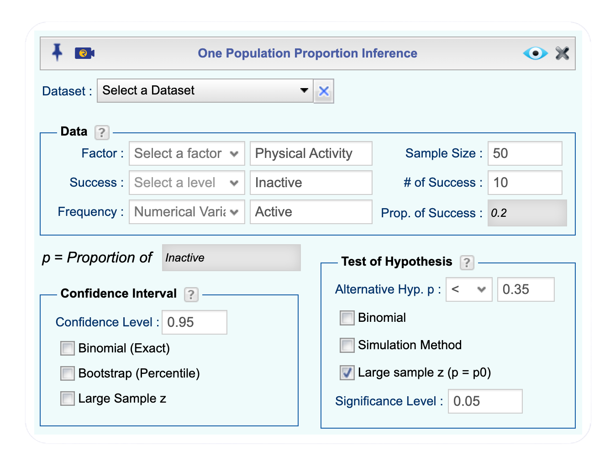
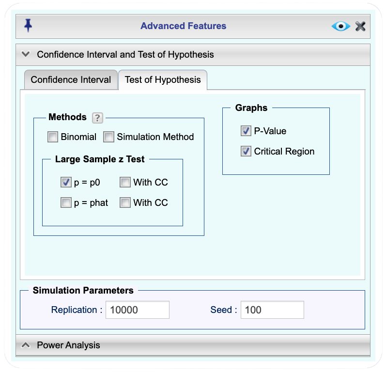
Click to expand the box below to see the Rguroo output.
Rguroo output: One-Population Proportion Inference - Physical Inactivity
- From the Rguroo output, the critical region is \(\hat{p} \leq \hat{p}^*\), where \(\hat{p}^* = 0.23905\) (see Figure 7.24).
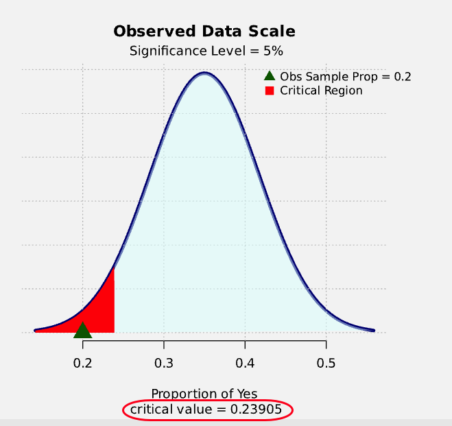
In words: if the observed sample proportion of physically inactive adults is 0.23905 or less, we reject \(H_0\) and conclude that fewer than 35% of adults in the country are physically inactive.
- Since \(H_a: p < 0.35\), the \(H_a\) support consists of all values of \(\hat{p}\) that are less than or equal to the observed sample proportion \(\hat{p}_{\text{obs}} = 10/50 = 0.20\). From the Rguroo output, the p-value is approximately 0.01308 (see Figure 7.25).
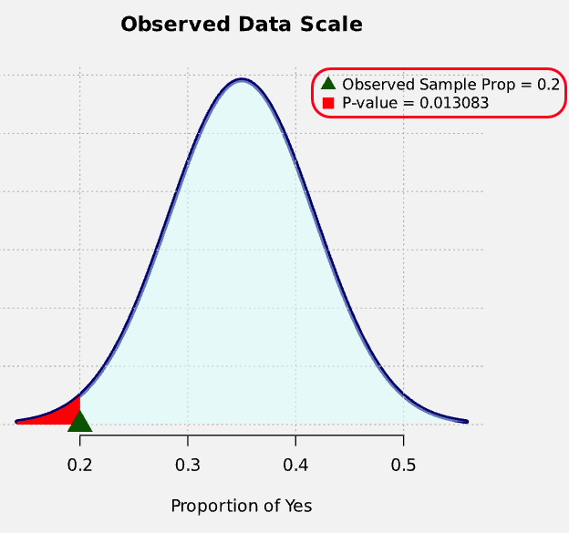
- The p-value can be written as the probability \[\text{p-value} = P\!\left(\hat{p} \leq 0.20 \mid p = 0.35\right) \approx \text{0.01308}.\] This is the probability of observing a sample proportion as low as \(0.20\) or lower, assuming that the true proportion of physically inactive adults is \(p = 0.35\).
c. Since the p-value (0.01308) is less than the significance level (0.05), we reject the null hypothesis \(H_0\) and conclude that there is sufficient evidence to support the claim that fewer than 35% of adults in the country are physically inactive.
The same conclusion can be reached by comparing the observed sample proportion (0.20) to the critical value (0.23905). Since 0.20 is less than 0.23905, it falls within the critical region, leading us to reject $H_0$ and conclude that the data provide evidence in favor of the alternative hypothesis that the true proportion of physically inactive adults is less than 0.35.Example 7.24 (Marijuana Legalization (continued)) Recall Example 7.22. A researcher claims that more than 70% of American adults support the legalization of marijuana. Using the GSS2024 dataset, which contains responses from \(n = 388\) respondents, \(x_{\text{obs}} = 282\) answered Yes to supporting legalization. The hypotheses are: \[ \begin{cases} H_0: p \leq 0.70 \\ H_a: p > 0.70 \end{cases} \]
- Check whether the conditions for the normal approximation hold.
- Use Rguroo’s Proportion Inference function to obtain an output that includes both the critical region and the p-value, then answer the following:
- What is the critical region, and in words, what is the decision rule?
- What is the \(H_a\) support, and what is the p-value?
- Write a probability statement that describes the p-value. c. In light of the observed data and the critical region and p-value, state your conclusion in the context of the problem.
7.6.4 Homework for Section Section 7.6
For each of the scenarios described in Problems 1–7 of Section 7.2.3, use Rguroo’s One-Population Proportion inference function with the Large Sample z (p=p0) option to carry out the hypothesis test at the given significance level. Before running the analysis, check whether the large sample condition is satisfied. If it is, identify the following inputs for the Rguroo dialog:
- Factor Label: A descriptive name for the variable being studied
- Success: The outcome that counts as a success
- Failure: The outcome that counts as a failure
- Sample Size: The value of \(n\)
- # of Successes: The value of \(x_{\text{obs}}\)
- Proportion of …: The label describing what the proportion represents
Then carry out the test, report Rguroo’s p-value, and interpret the results.
Arizona Marijuana Legalization In Problem 1 (Arizona Marijuana Legalization) of Section 7.2.3, \(p\) is the true proportion of Arizona registered voters who support marijuana legalization. Do Arizona registered voters differ from Colorado residents in their support for marijuana legalization? The sample consisted of \(n = 779\) voters, of whom \(x_{\text{obs}} = 390\) favored legalization. Use \(\alpha = 0.05\).
Australian Unemployment Outlook In Problem 2 (Australian Unemployment Outlook) of Section 7.2.3, \(p\) is the true proportion of Australians in November 1997 who believed unemployment would increase. Did Australian sentiment about unemployment shift between July and November of 1997? The sample consisted of \(n = 631\) Australians, of whom \(x_{\text{obs}} = 284\) believed unemployment would increase. Use \(\alpha = 0.05\).
Arkansas Identity Theft Complaints In Problem 3 (Arkansas Identity Theft Complaints) of Section 7.2.3, \(p\) is the true proportion of consumer complaints in Arkansas that were for identity theft. Was the proportion of identity theft complaints in Arkansas greater than the national figure of 23%? The sample consisted of \(n = 3{,}482\) complaints, of which \(x_{\text{obs}} = 1{,}601\) were for identity theft. Use \(\alpha = 0.05\).
Alaska Identity Theft Complaints In Problem 4 (Alaska Identity Theft Complaints) of Section 7.2.3, \(p\) is the true proportion of consumer complaints in Alaska that were for identity theft. Was Alaska’s proportion of identity theft complaints less than the national proportion of 23%? The sample consisted of \(n = 1{,}432\) complaints, of which \(x_{\text{obs}} = 321\) were for identity theft. Use \(\alpha = 0.05\).
Kennedy Assassination Conspiracy Belief In Problem 5 (Kennedy Assassination Conspiracy Belief) of Section 7.2.3, \(p\) is the true proportion of American adults in 2013 who believed there was a conspiracy behind President Kennedy’s assassination. Is there evidence that American belief in a conspiracy behind President Kennedy’s assassination changed between 2001 and 2013? The sample consisted of \(n = 1{,}039\) adults, of whom \(x_{\text{obs}} = 634\) believed in a conspiracy. Use \(\alpha = 0.05\).
Autism Spectrum Disorder in Arizona In Problem 6 (Autism Spectrum Disorder in Arizona) of Section 7.2.3, \(p\) is the true proportion of children in Arizona diagnosed with ASD. Is the rate of ASD diagnosis among children in Arizona greater than the national rate of 1 in 88 children? The sample consisted of \(n = 32{,}601\) children, of whom \(x_{\text{obs}} = 507\) were diagnosed with ASD. Use \(\alpha = 0.05\).
Graduate Degree Attainment: GSS2024 In Problem 7 (Graduate Degree Attainment: GSS2024) of Section 7.2.3, \(p\) is the true proportion of U.S. adults who hold a graduate degree. Does the GSS2024 data provide evidence that the proportion of U.S. adults who hold a graduate degree differs from the 15% reported by the U.S. Census Bureau? Use \(\alpha = 0.05\).
 The dataset for this exercise is available in the Rguroo dataset repository Kozak, with the dataset name GSS2024.
The dataset for this exercise is available in the Rguroo dataset repository Kozak, with the dataset name GSS2024.
Code book for Dataset GSS2024 is given here.
7.7 Confidence Interval for a Population Proportion
We have seen that the sample proportion \(\hat{p}\) is a natural estimate of the population proportion \(p\). However, because \(\hat{p}\) is based on a random sample, it varies from sample to sample and will rarely equal \(p\) exactly. This raises a natural question: given what we observed in our sample, what can we say about the range of plausible values for \(p\)?
To build intuition, think about what would happen if we repeated our study many times. Each time, we would draw a new random sample of size \(n\), compute a new observed sample proportion \(\hat{p}_{\text{obs}}\), and use it to build an interval of plausible values for \(p\) around \(\hat{p}_{\text{obs}}\). Because \(\hat{p}_{\text{obs}}\) varies from sample to sample due to sampling variability, the intervals we construct would shift around as well. As a result, some intervals would contain the true value of \(p\) and some might not, depending on how far \(\hat{p}_{\text{obs}}\) happens to fall from \(p\) in any given sample and the method that we use to build the interval. This is the unavoidable uncertainty that comes with basing our conclusions on a single sample. The key insight is that by choosing a specific, well-defined method for constructing the interval, rather than building it arbitrarily, we can control how often it succeeds in capturing the true value of \(p\) across many repetitions. The percentage of intervals that we expect to contain the true value of \(p\) when using such a method is called the confidence level. For example, a method that captures the true value of \(p\) in 95% of all repetitions produces what we call a 95% confidence interval.
Notice that the confidence level describes the long-run behavior of the method, not any single interval. In practice, we collect one sample and compute one interval. That specific interval either contains the true value of \(p\) or it does not, we just do not know which. What we can say is that we used a reliable method: one that succeeds in capturing the true value of \(p\) at the stated confidence level across many repetitions.
Now that we have defined the confidence level, we can ask: how do we actually construct such an interval? We already have a tool that tells us whether a specific value of \(p_0\) is consistent with our data: the two-sided hypothesis test. If we test \(H_0: p = p_0\) versus \(H_a: p \neq p_0\) at significance level \(\alpha = 1 - \text{confidence level}\) and fail to reject \(H_0\), it means our data are consistent with \(p_0\). If we reject \(H_0\), it means \(p_0\) is not a plausible value of \(p\) given our data. This suggests a natural strategy: test a range of values of \(p_0\) and collect all those for which we fail to reject \(H_0\). The collection of all such values forms our confidence interval.
The following example illustrates this idea concretely by working through a grid of values of \(p_0\) and identifying which ones are consistent with the observed data.
Example 7.25 (Daily YouTube Use Among Teens: Building a Confidence Interval from a Grid) Recall Example 7.1. A sample of \(n = 20\) students produced \(x_{\text{obs}} = 17\) daily YouTube users, giving a sample proportion of \(\hat{p}_{\text{obs}} = 17/20 = 0.85\).
For each value of \(p_0\) shown in the grid below, carry out the two-sided hypothesis test \(H_0: p = p_0\) versus \(H_a: p \neq p_0\) at significance level \(\alpha = 0.05\), using the binomial distribution with \(n = 20\) and \(x_{\text{obs}} = 17\). Based on the results, identify the range of values of \(p_0\) for which we fail to reject \(H_0\).
The confidence interval that we obtained in the example above is the collection of all values of \(p_0\) that are consistent with our observed data at significance level \(\alpha = 0.05\). Notice that the interval is not symmetric around \(\hat{p}_{\text{obs}} = 0.85\): it extends further below \(\hat{p}_{\text{obs}}\) (down to approximately 0.65) than above it (up to approximately 0.95). To understand why, recall the large sample condition from Section 7.6. Using \(\hat{p}_{\text{obs}} = 0.85\) as our estimate of \(p\), we compute:
\[n\hat{p}_{\text{obs}} = 20 \times 0.85 = 17 \geq 10 \qquad \text{but} \qquad n(1-\hat{p}_{\text{obs}}) = 20 \times 0.15 = 3 < 10.\]
The condition fails because the expected number of failures is only 3, which means the binomial distribution is noticeably skewed in this example. As a result, the interval is asymmetric, and this asymmetry is real and should be reflected in our confidence interval. A method that forces a symmetric interval would miss this feature of the data and could give misleading results.
This example illustrates that the choice of method for constructing a confidence interval matters. In the subsections that follow, we study two approaches in detail. The first, presented in Section 7.7.1, inverts the exact binomial test to produce a confidence interval that correctly captures asymmetry when it is present. The second, presented in Section 7.7.2, uses the normal approximation and always produces a symmetric interval, which is accurate when the large sample condition is satisfied but can be misleading when it is not, as in this example.
7.7.1 Confidence Interval Based on the Exact Binomial Method
As we saw in Example 7.25, we can construct a confidence interval for the population proportion \(p\) by testing a grid of null hypotheses \(H_0: p = p_0\) and collecting all values of \(p_0\) for which we fail to reject \(H_0\). When this approach uses the exact binomial distribution to carry out each test, the resulting interval is called the exact binomial confidence interval. As we noted in that example, this method has an important advantage: it correctly reflects any asymmetry in the data, which can occur when the large sample condition fails and the binomial distribution is skewed.
Of course, testing every conceivable value of \(p_0\) between 0 and 1 is not practical. Fortunately, efficient algorithms can locate the exact endpoints of the interval directly, without testing each value one by one. These algorithms are implemented in Rguroo, making it straightforward to obtain the exact binomial confidence interval in practice. The following example illustrates how.
Example 7.26 (Daily YouTube Use Among Teens: Exact Binomial Confidence Interval) Recall Example 7.1. A sample of \(n = 20\) students produced \(x_{\text{obs}} = 17\) daily YouTube users, giving a sample proportion of \(\hat{p}_{\text{obs}} = 17/20 = 0.85\). Use Rguroo’s One-Population Proportion inference function to construct a 95% exact binomial confidence interval for the true proportion of students in the district who use YouTube daily, and interpret the interval in the context of the problem.
🔎 Solution
Click to expand the box below to see how to use the Proportion Inference function in Rguroo to obtain an exact binomial confidence interval for this problem.
Open the Analytics toolbox in Rguroo.
From the Analysis dropdown, select Proportion Inference → One Population. This opens the One Population Proportion Inference dialog.
In the Data section of the dialog, enter the following:
- In the Factor Label textbox, type a label for the categorical variable. In Rguroo, a “factor” refers to a categorical variable. For this example, enter Daily YouTube Use.
- In the Success Label textbox, type Yes. A success corresponds to a student who uses YouTube daily.
- In the Failure Label textbox, type No.
- In the Sample Size textbox, type 20.
- In the # of Successes textbox, type 17.
In the Confidence Interval section of the dialog, enter the following:
- In the Confidence Level textbox enter 0.95. This is the default value corresponding to the confidence level 95%.
- Select the Binomial (Exact) checkbox to obtain the exact binomial confidence interval.
Click the preview icon
to view the output.Click the
button and save the result as YoutubeBinomCi.
Rguroo One-Population Proportion dialogs

Click to expand the box below to see the Rguroo output.
Rguroo output: One-Population Proportion Inference Output - YouTube
From the Rguroo output, the 95% exact binomial confidence interval for \(p\) is \((0.628, 0.958)\). The following is an interpretation of this interval:
We are 95% confident that the true proportion of students in the district who use YouTube daily is between 0.628 (62.8%) and 0.958 (95.8%).
Notice that this interval is consistent with what we found using the grid in Example 7.25, where we identified the range of plausible values as approximately 0.65 to 0.95. The exact interval extends the lower endpoint slightly further down to 0.628, which falls between the grid values 0.60 and 0.65 where we saw the p-value cross the 0.05 threshold, exactly as we anticipated. The exact interval also confirms the upper endpoint near 0.958, consistent with our grid result of approximately 0.95. This agreement gives us confidence that the grid approach captured the right range, while the exact binomial method pins down the endpoints precisely.
Also notice that the interval is not symmetric around \(\hat{p}_{\text{obs}} = 0.85\): the lower endpoint is \(0.85 - 0.628 = 0.222\) below \(\hat{p}_{\text{obs}}\), while the upper endpoint is only \(0.958 - 0.85 = 0.108\) above it. This asymmetry is expected given that the large sample condition fails for this example , as we verified in Example 7.25, the expected number of failures is only \(20 \times 0.15 = 3\), which is less than 10.
Example 7.27 (Physical Inactivity Among Adults: Exact Binomial Confidence Interval) Recall Example 7.2. A sample of \(n = 50\) adults produced \(x_{\text{obs}} = 10\) physically inactive individuals, giving a sample proportion of \(\hat{p}_{\text{obs}} = 10/50 = 0.20\). Use Rguroo’s One-Population Proportion inference function to construct a 95% exact binomial confidence interval for the true proportion of adults in the country who are physically inactive, and interpret the interval in the context of the problem.
🔎 Solution
The following is a screenshot of the One Population Proportion Inference for obtaining the exact binomial confidence interval for this example.
![Screenshot of a “One Population Proportion Inference” interface. The factor is “Physically Inactive,” with success defined as “Yes.” The sample size is 50 with 10 successes, giving a sample proportion of 0.20. In the Confidence Interval section, the 95% level is selected and the “Binomial (Exact)” option is checked, while Bootstrap and Large Sample z are unchecked. In the Test of Hypothesis panel, an alternative proportion value of 0.35 is entered, but no test method is selected, and the significance level is 0.05.](Rguroo_dialogs/Proportion_inference/binom-ci-inactive_dialog.png)
Click to expand the box below to see the Rguroo output.
Rguroo output: One-Population Proportion Inference Output - Social Media
From the Rguroo output, the 95% exact binomial confidence interval for \(p\) is \((0.106, 0.338)\). We are 95% confident that the true proportion of adults in the country who are physically inactive is between 0.106 (10.6%) and 0.338 (33.8%).
It is intersting to check whether the interval is symmetric around \(\hat{p}_{\text{obs}} = 0.20\). We verify the large sample condition using \(\hat{p}_{\text{obs}}\) as our estimate of \(p\):
\[n\hat{p}_{\text{obs}} = 50 \times 0.20 = 10 \geq 10 \qquad \text{and} \qquad n(1-\hat{p}_{\text{obs}}) = 50 \times 0.80 = 40 \geq 10.\]
Both conditions are satisfied, so the binomial distribution should be reasonably symmetric in this case, and we would expect the interval to be approximately symmetric around \(\hat{p}_{\text{obs}} = 0.20\). Indeed, the lower endpoint is \(0.20 - 0.098 = 0.102\) below \(\hat{p}_{\text{obs}}\) and the upper endpoint is \(0.341 - 0.20 = 0.141\) above it, reasonably close to symmetric, with only a slight asymmetry.
🔎 Solution
The following is a screenshot of the One Population Proportion Inference for obtaining the exact binomial confidence interval for this example.
![Screenshot of a “One Population Proportion Inference” interface. The factor is “Use Social media,” with success defined as “Yes.” The sample size is 15 with 9 successes, giving a sample proportion of 0.60. In the Confidence Interval section, the 95% level is selected and the “Binomial (Exact)” option is checked, while Bootstrap and Large Sample z are unchecked. In the Test of Hypothesis panel, a left-tailed alternative hypothesis (p < 0.35) is selected, the Binomial test method is checked, and the significance level is 0.05.](Rguroo_dialogs/Proportion_inference/binom-ci-social_dialog.png)
Click to expand the box below to see the Rguroo output.
Rguroo output: One-Population Proportion Inference Output - Social Media
From the Rguroo output, the 95% exact binomial confidence interval for \(p\) is \((0.332, 0.809)\). We are 95% confident that the true proportion of students at the university who get most of their news from social media is between 0.332 (33.2%) and 0.809 (80.9%).
Example 7.29 (Marijuana Legalization: Exact Binomial Confidence Interval) Recall Example 7.22. The GSS2024 dataset contains responses from \(n = 388\) U.S. adults, of whom \(x_{\text{obs}} = 282\) supported the legalization of marijuana, giving a sample proportion of \(\hat{p}_{\text{obs}} = 282/388 \approx 0.7268\). Use Rguroo’s One-Population Proportion inference function to construct a 95% exact binomial confidence interval for the true proportion of American adults who support the legalization of marijuana, and interpret the interval in the context of the problem.
 The dataset for this example is available in the Rguroo dataset repository Kozak, with the dataset name GSS2024.
The dataset for this example is available in the Rguroo dataset repository Kozak, with the dataset name GSS2024.
Code book for Dataset GSS2024 is given here.
7.7.2 Confidence Interval Based on the Large Sample Normal Approximation
In the previous section, we constructed confidence intervals using the exact binomial distribution. This approach is statistically precise and, as we saw, correctly captures any asymmetry in the interval when the large sample condition fails. With modern software like Rguroo, it is just as easy to compute as any other method.
However, long before computers were widely available, statisticians needed a way to construct confidence intervals that could be carried out with nothing more than a printed table of normal probabilities and a hand calculator. The key insight that made this possible is one we have already seen: when the large sample condition is satisfied, the sample proportion \(\hat{p}\) is approximately normally distributed. This means we can replace the exact binomial calculation with a normal-based one, leading to a simple formula that can be computed by hand.
Why Learn the Normal Approximation Method?
Even though software makes the exact binomial interval easy to obtain, the normal approximation method remains important for two reasons:
- It is the method most commonly reported in published research and popular media, so understanding it is essential for reading and interpreting results you will encounter in practice.
- It connects naturally to confidence intervals for other parameters, such as population means, where an exact distribution is not available and the normal approximation is the standard tool.
Recall from Section 7.6 that when the large sample condition is satisfied, the sample proportion \(\hat{p}\) is approximately normally distributed with mean \(p\) and standard deviation \(\sqrt{p(1-p)/n}\). In principle, the large sample condition requires that \(np \geq 10\) and \(n(1-p) \geq 10\). However, since \(p\) is unknown, we use \(\hat{p}_{\text{obs}}\) in its place to check these conditions and to estimate the standard deviation of \(\hat{p}\). The resulting estimated standard deviation is called the standard error of \(\hat{p}\):
\[\text{SE}(\hat{p}) = \sqrt{\frac{\hat{p}_{\text{obs}}(1 - \hat{p}_{\text{obs}})}{n}}.\]
The large sample condition is therefore checked as:
\[n\hat{p}_{\text{obs}} \geq 10 \qquad \text{and} \qquad n(1-\hat{p}_{\text{obs}}) \geq 10.\]
When this condition is satisfied, the \((1-\alpha) \times 100\%\) confidence interval for \(p\) takes the form
\[\hat{p}_{\text{obs}} \pm z^* \times \text{SE}(\hat{p}),\]
where \(z^*\) is the critical value from the standard normal distribution corresponding to the desired confidence level. The quantity \(z^* \times \text{SE}(\hat{p})\) is called the margin of error. It represents how far above and below \(\hat{p}_{\text{obs}}\) we extend the interval, and it captures the uncertainty in our estimate of \(p\) due to sampling variability. A larger margin of error means more uncertainty — which happens when the sample size is small, when \(\hat{p}_{\text{obs}}\) is close to 0.5, or when a higher confidence level is chosen.
Common critical values are:
| Confidence Level | \(\alpha\) | \(z^*\) |
|---|---|---|
| 90% | 0.10 | 1.645 |
| 95% | 0.05 | 1.960 |
| 99% | 0.01 | 2.576 |
Large Sample Confidence Interval for a Population Proportion
When the large sample condition \(n\hat{p}_{\text{obs}} \geq 10\) and \(n(1-\hat{p}_{\text{obs}}) \geq 10\) is satisfied, an approximate \((1-\alpha) \times 100\%\) confidence interval for \(p\) is:
\[\hat{p}_{\text{obs}} \pm \underbrace{z^* \times \sqrt{\frac{\hat{p}_{\text{obs}}(1-\hat{p}_{\text{obs}})}{n}}}_{\text{margin of error}},\]
which gives the interval
\[\left(\hat{p}_{\text{obs}} - z^* \times \sqrt{\frac{\hat{p}_{\text{obs}}(1-\hat{p}_{\text{obs}})}{n}},\; \hat{p}_{\text{obs}} + z^* \times \sqrt{\frac{\hat{p}_{\text{obs}}(1-\hat{p}_{\text{obs}})}{n}}\right).\]
Notice that this interval is always symmetric around \(\hat{p}_{\text{obs}}\), which is accurate when the large sample condition is satisfied but may be misleading when it is not.
Example 7.30 (Daily YouTube Use Among Teens: Large Sample Confidence Interval) Recall Example 7.1. A sample of \(n = 20\) students produced \(x_{\text{obs}} = 17\) daily YouTube users, giving a sample proportion of \(\hat{p}_{\text{obs}} = 17/20 = 0.85\).
- Use Rguroo’s One-Population Proportion inference function to obtain a 95% large sample normal approximation confidence interval for the true proportion of students in the district who use YouTube daily.
- Compare this interval to the exact binomial confidence interval obtained in Example 7.26, and comment on the agreement or discrepancy in light of the 10-10 rule.
🔎 Solution
- Click to expand the box below to see how to use the Proportion Inference function in Rguroo to obtain a large sample normal confidence interval for this problem.
Open the Analytics toolbox in Rguroo.
From the Analysis dropdown, select Proportion Inference → One Population. This opens the One Population Proportion Inference dialog.
In the Data section of the dialog, enter the following:
- In the Factor Label textbox, type a label for the categorical variable. In Rguroo, a “factor” refers to a categorical variable. For this example, enter Daily YouTube Use.
- In the Success Label textbox, type Yes. A success corresponds to a student who uses YouTube daily.
- In the Failure Label textbox, type No.
- In the Sample Size textbox, type 20.
- In the # of Successes textbox, type 17.
In the Confidence Interval section of the dialog, enter the following:
- In the Confidence Level textbox enter 0.95. This is the default value corresponding to the confidence level 95%.
- Select the Large Sampel z checkbox to obtain the large sample normal confidence interval.
Click the preview icon
to view the output.Click the
button and save the result as YoutubenormalCi.
Rguroo One-Population Proportion dialogs
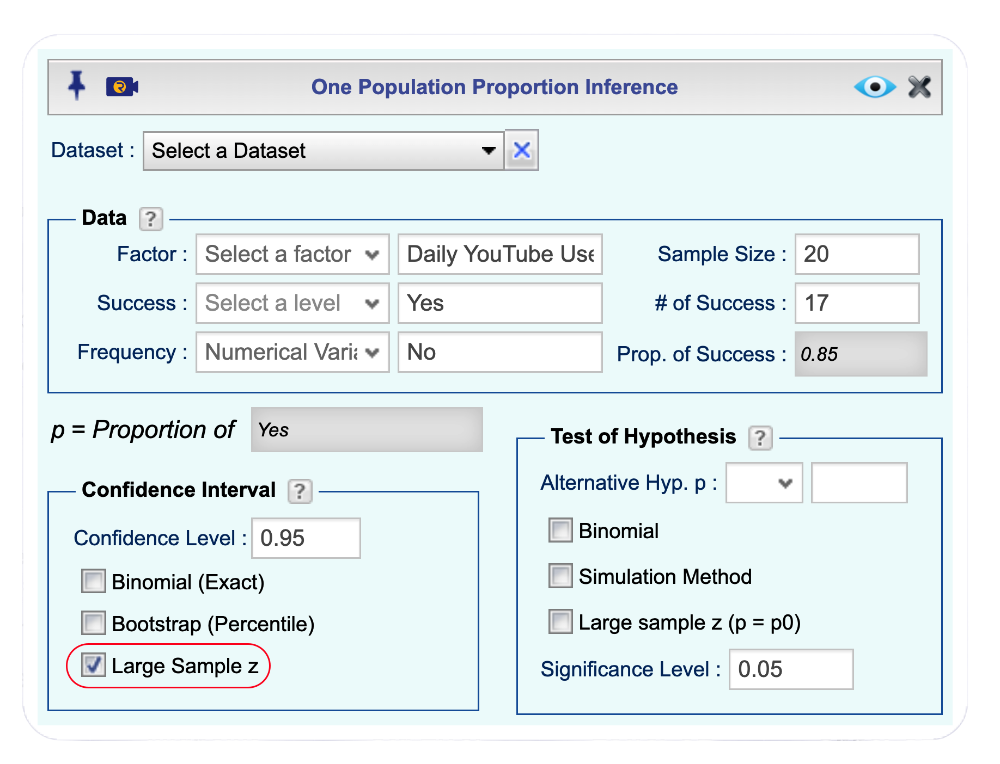
Click to expand the box below to see the Rguroo output.
Rguroo output: One-Population Proportion Inference Output - YouTube
From the Rguroo output, the 95% large sample confidence interval for \(p\) is \((0.693, 1.00)\). We are 95% confident that the true proportion of students in the district who use YouTube daily is between 0.693 (69.3%) and 1.00 (100%).
- In Example 7.26, the 95% exact binomial confidence interval was \((0.628, 0.958)\). Recall from Example 7.25 that the 10-10 rule gives:
\[n\hat{p}_{\text{obs}} = 20 \times 0.85 = 17 \geq 10 \qquad \text{but} \qquad n(1-\hat{p}_{\text{obs}}) = 20 \times 0.15 = 3 < 10.\]
The large sample condition fails because the expected number of failures is only 3. We therefore expect the normal approximation interval to be less accurate than the exact binomial interval. Indeed, the large sample interval is different from the exact binomial. In cases like this one, the exact binomial interval from Example 7.26 is the more trustworthy result.
Example 7.31 (Physical Inactivity Among Adults: Large Sample Confidence Interval) Recall Example 7.2. A sample of \(n = 50\) adults produced \(x_{\text{obs}} = 10\) physically inactive individuals, giving a sample proportion of \(\hat{p}_{\text{obs}} = 10/50 = 0.20\).
- Use Rguroo’s One-Population Proportion inference function to obtain a 95% large sample normal approximation confidence interval for the true proportion of adults in the country who are physically inactive.
- Compare this interval to the exact binomial confidence interval obtained in Example 7.27, and comment on the agreement or discrepancy in light of the 10-10 rule.
Example 7.33 (Marijuana Legalization: Large Sample Confidence Interval) Recall Example 7.22. The GSS2024 dataset contains responses from \(n = 388\) U.S. adults, of whom \(x_{\text{obs}} = 282\) supported the legalization of marijuana, giving a sample proportion of \(\hat{p}_{\text{obs}} = 282/388 \approx 0.7268\).
- Use Rguroo’s One-Population Proportion inference function to obtain a 95% large sample normal approximation confidence interval for the true proportion of American adults who support the legalization of marijuana.
- Compare this interval to the exact binomial confidence interval obtained in Example 7.29, and comment on the agreement or discrepancy in light of the 10-10 rule.
 The dataset for this example is available in the Rguroo dataset repository Kozak, with the dataset name GSS2024.
The dataset for this example is available in the Rguroo dataset repository Kozak, with the dataset name GSS2024.
Code book for Dataset GSS2024 is given here.
7.7.3 Homework for Section 7.7.1 and Section 7.7.2
For each of the scenarios described in Problems 1–7 of Section 7.2.3, answer the following:
- Check whether the large sample condition is satisfied using the 10-10 rule. Based on your answer, determine whether the large sample normal approximation confidence interval is appropriate.
- Use Rguroo’s One-Population Proportion inference function with the Binomial option to obtain a 95% exact binomial confidence interval for \(p\). Interpret the interval in the context of the problem.
- Use Rguroo’s One-Population Proportion inference function with the Large Sample z option to obtain a 95% large sample normal approximation confidence interval for \(p\). Interpret the interval in the context of the problem, and compare it to the exact binomial interval obtained in part (b). Is the comparison consistent with what you found in part (a)?
Arizona Marijuana Legalization In Problem 1 (Arizona Marijuana Legalization) of Section 7.2.3, \(p\) is the true proportion of Arizona registered voters who support marijuana legalization. The sample consisted of \(n = 779\) voters, of whom \(x_{\text{obs}} = 390\) favored legalization.
Australian Unemployment Outlook In Problem 2 (Australian Unemployment Outlook) of Section 7.2.3, \(p\) is the true proportion of Australians in November 1997 who believed unemployment would increase. The sample consisted of \(n = 631\) Australians, of whom \(x_{\text{obs}} = 284\) believed unemployment would increase.
Arkansas Identity Theft Complaints In Problem 3 (Arkansas Identity Theft Complaints) of Section 7.2.3, \(p\) is the true proportion of consumer complaints in Arkansas that were for identity theft. The sample consisted of \(n = 3{,}482\) complaints, of which \(x_{\text{obs}} = 1{,}601\) were for identity theft.
Daily YouTube Use Among Teens: Small Sample Recall Example 7.1. Suppose that instead of a sample of \(n = 20\) students, only \(n = 15\) students were available, and \(x_{\text{obs}} = 13\) of them reported using YouTube daily.
Social Media as a Primary News Source: Small Sample Recall Example 7.3. Suppose that instead of a sample of \(n = 15\) students, only \(n = 12\) students were available, and \(x_{\text{obs}} = 7\) of them reported using social media as their primary news source.
Alaska Identity Theft Complaints In Problem 4 (Alaska Identity Theft Complaints) of Section 7.2.3, \(p\) is the true proportion of consumer complaints in Alaska that were for identity theft. The sample consisted of \(n = 1{,}432\) complaints, of which \(x_{\text{obs}} = 321\) were for identity theft.
Kennedy Assassination Conspiracy Belief In Problem 5 (Kennedy Assassination Conspiracy Belief) of Section 7.2.3, \(p\) is the true proportion of American adults in 2013 who believed there was a conspiracy behind President Kennedy’s assassination. The sample consisted of \(n = 1{,}039\) adults, of whom \(x_{\text{obs}} = 634\) believed in a conspiracy.
Autism Spectrum Disorder in Arizona In Problem 6 (Autism Spectrum Disorder in Arizona) of Section 7.2.3, \(p\) is the true proportion of children in Arizona diagnosed with ASD. The sample consisted of \(n = 32{,}601\) children, of whom \(x_{\text{obs}} = 507\) were diagnosed with ASD.
Graduate Degree Attainment: GSS2024 In Problem 7 (Graduate Degree Attainment: GSS2024) of Section 7.2.3, \(p\) is the true proportion of U.S. adults who hold a graduate degree. The sample consisted of \(n = 388\) adults, of whom \(x_{\text{obs}} = 33\) reported a graduate degree as their highest level of education.
 The dataset for this exercise is available in the Rguroo dataset repository Kozak, with the dataset name GSS2024.
The dataset for this exercise is available in the Rguroo dataset repository Kozak, with the dataset name GSS2024.
Code book for Dataset GSS2024 is given here.
7.8 Hypothesis Testing for Two Proportions
Many important research questions require comparing proportions between two groups. In medical research, clinical trials compare treatment outcomes between patients receiving a new therapy and those receiving a placebo or standard care. In the social sciences, researchers investigate differences between demographic groups. In educational research, teachers evaluate whether new instructional methods outperform traditional approaches. Understanding how to compare two population proportions allows us to evaluate whether observed differences in sample data reflect genuine population differences or are due to chance variation.
Consider a few recent examples: A Phase 3 trial of the mRNA-1273 vaccine (Moderna) with over 30,000 participants found that 0.4% of the vaccinated group developed symptomatic COVID-19 compared to 4.9% in the placebo group—a substantial difference. A 2022 study examining 1,166 articles in Political Psychology found that 35.1% of lead authors were women compared to 64.9% men, highlighting a gender gap in academic publishing. In each case, researchers collected data from two independent samples, observed different sample proportions, and found statistical evidence that the population proportions differed.
While these large-scale studies demonstrate striking differences, many research questions involve smaller samples and more subtle effects where the statistical evidence is less clear-cut. In this section, we develop the concepts and tools for comparing two population proportions by working with examples where the answer is not immediately obvious and careful statistical reasoning is required.
We extend the hypothesis testing framework from one proportion to two proportions. The same core concepts—null and alternative hypotheses, test statistics, p-values, Type I and Type II errors, and significance levels—continue to apply. However, we now focus on the difference between two population proportions rather than a single proportion.
7.8.1 The Null and Alternative Hypotheses
To develop these concepts and tools, we’ll work with four examples: an educational intervention comparing instructional approaches for teaching proportional reasoning, a health behavior study evaluating text message reminders for medication adherence, a workplace wellness program assessing nicotine patches for smoking cessation, and an analysis of gender differences in attitudes toward marijuana legalization from the General Social Survey.
When comparing two population proportions, we focus on the difference between them. We have two populations—let’s call one population 1 and the other population 2. It does not matter which population you designate as population 1 and which as population 2, as long as you clearly define your choice and interpret the difference \(p_1 - p_2\) accordingly. We denote the population proportion for population 1 by \(p_1\) and the population proportion for population 2 by \(p_2\). Our goal is to make inferences about the difference between these proportions: \(p_1 - p_2\). To do this, we begin by formulating hypotheses about this difference.
Just as in the one-population case, we can formulate both one-sided and two-sided tests. The three cases are:
\[ \begin{aligned} \text{Case 1: } &\begin{cases} H_0: p_1 \leq p_2 \\ H_a: p_1 > p_2 \end{cases} \qquad \text{Case 2: } \begin{cases} H_0: p_1 \geq p_2 \\ H_a: p_1 < p_2 \end{cases} \\ \\ \text{Case 3: } &\begin{cases} H_0: p_1 = p_2 \\ H_a: p_1 \neq p_2 \end{cases} \end{aligned} \]
We can equivalently write these hypotheses in terms of the difference \(p_1 - p_2\):
\[ \begin{aligned} \text{Case 1: } &\begin{cases} H_0: p_1 - p_2 \leq 0 \\ H_a: p_1 - p_2 > 0 \end{cases} \qquad \text{Case 2: } \begin{cases} H_0: p_1 - p_2 \geq 0 \\ H_a: p_1 - p_2 < 0 \end{cases} \\ \\ \text{Case 3: } &\begin{cases} H_0: p_1 - p_2 = 0 \\ H_a: p_1 - p_2 \neq 0 \end{cases} \end{aligned} \]
Cases 1 and 2 are one-sided tests, while Case 3 is a two-sided test. In practice, the choice of case depends on the research question—specifically, whether we are testing for an increase, a decrease, or any difference. Let’s see how to set up the hypotheses for each of our examples.
Example 7.34 (Schema-Based Instruction: Stating Hypotheses) Researchers want to know whether a new schema-based instructional approach improves seventh-grade students’ mastery of proportional reasoning compared to traditional instruction. They randomly assign 50 students to the new approach and 50 students to traditional instruction. Let \(p_1\) represent the proportion of all students who would achieve mastery under the new approach, and \(p_2\) represent the proportion who would achieve mastery under traditional instruction. State the appropriate null and alternative hypotheses to address the research question.
Example 7.35 (Text Message Reminders: Stating Hypotheses) Researchers are piloting a text message reminder system for diabetes patients. They want to know whether daily text reminders improve medication adherence compared to standard care, but they’re also open to the possibility that the reminders might perform worse (perhaps by being annoying or overwhelming). They randomly assign 40 patients to receive text reminders and 50 patients to receive standard care. Let \(p_1\) represent the proportion of all patients who would have good adherence with text reminders, and \(p_2\) represent the proportion who would have good adherence with standard care. State the appropriate null and alternative hypotheses.
Example 7.36 (Smoking Cessation: Stating Hypotheses) A workplace wellness program is comparing two approaches to smoking cessation. Employees are randomly assigned to either receive free nicotine patches (60 employees) or participate in a self-guided quitting program (60 employees). However, the researchers believe that the self-guided approach might actually be more effective because it emphasizes personal commitment and doesn’t rely on external aids. Let \(p_1\) represent the proportion of all employees who would quit smoking with nicotine patches, and \(p_2\) represent the proportion who would quit with the self-guided approach. State the appropriate null and alternative hypotheses to test whether the self-guided approach is more effective.
Example 7.37 (GSS 2024: Gender and Marijuana Legalization) The General Social Survey (GSS) is a long-running national survey that monitors societal change and studies the growing complexity of American society. In a representative sample from the GSS 2024 data, there are 204 females and 184 males who were asked whether they support the legalization of marijuana. Of the 204 females, 142 said they support legalization. Of the 184 males, 140 said they support legalization. Researchers want to know whether this sample provides evidence that the proportion of females who support legalization differs from the proportion of males who support legalization. Let \(p_1\) represent the proportion of females in the population who support legalization, and \(p_2\) represent the proportion of males who support legalization. State the appropriate null and alternative hypotheses.
7.8.2 Data, Statistic, and Sampling Distribution
To make inferences about \(p_1 - p_2\), we collect a sample of size \(n_1\) from population 1 and a sample of size \(n_2\) from population 2. Note that these sample sizes don’t have to be equal—researchers often work with unequal group sizes due to practical constraints or deliberate design choices.
Let \(X_1\) denote the number of successes (favorable outcomes) in our sample from population 1, and let \(X_2\) denote the number of successes in our sample from population 2. While it might seem natural to base our inference on the difference in counts, \(D = X_1 - X_2\), this approach is difficult to work with because the distribution of \(X_1 - X_2\) is not simple. Unlike the one-population case where the number of successes follows a binomial distribution, the exact distribution of \(X_1 - X_2\) is not simple to work with. Instead, we’ll use sample proportions and rely on the Central Limit Theorem for large samples.
The sample proportions are \(\hat{p}_1 = X_1/n_1\) and \(\hat{p}_2 = X_2/n_2\). These are our point estimates of \(p_1\) and \(p_2\), respectively. To make inferences about the difference \(p_1 - p_2\), we naturally use the difference in sample proportions: \(\hat{p}_1 - \hat{p}_2\).
Example 7.38 (Schema-Based Instruction: Sample Proportions) In the schema-based instruction study, 50 students were assigned to the new approach and 50 to traditional instruction. After the intervention, 34 students in the new approach group achieved mastery, while 24 students in the traditional instruction group achieved mastery. Calculate the sample proportions and their difference.
Example 7.39 (Text Message Reminders: Sample Proportions) In the text message reminder study, 40 patients received text reminders and 50 received standard care. After three months, 32 patients in the text reminder group had good adherence, while 28 patients in the standard care group had good adherence. Calculate the sample proportions and their difference.
Example 7.40 (Smoking Cessation: Sample Proportions) In the smoking cessation study, 60 employees received nicotine patches and 60 participated in the self-guided program. After six months, 24 employees in the nicotine patch group had quit smoking, while 15 in the self-guided group had quit. Calculate the sample proportions and their difference.
Example 7.41 (GSS 2024: Sample Proportions for Marijuana Legalization Support) In the GSS 2024 sample, 204 females were surveyed and 142 of them support marijuana legalization. Among 184 males surveyed, 140 support legalization. Calculate the sample proportions and their difference.
The Sampling Distribution of \(\hat{p}_1 - \hat{p}_2\)
When the sample sizes \(n_1\) and \(n_2\) are both sufficiently large, the Central Limit Theorem tells us that the sampling distribution of \(\hat{p}_1 - \hat{p}_2\) is approximately normal. The rule of thumb for “sufficiently large” is that the rule of thumb is that each group must have at least 10 successes and 10 failures. That is, we should have \(n_1\hat{p}_1 \geq 10\), \(n_1(1-\hat{p}_1) \geq 10\), \(n_2\hat{p}_2 \geq 10\), and \(n_2(1-\hat{p}_2) \geq 10\).
When these conditions are met, the sampling distribution of \(\hat{p}_1 - \hat{p}_2\) is approximately normal with mean \(p_1 - p_2\) and standard error as shown below:
\[ \hat{p}_1 - \hat{p}_2 \sim N\left( p_1 - p_2, \text{S.E.}(\hat{p}_1 - \hat{p}_2)\right), \]
where the standard error is
\[ \begin{aligned} \text{S.E.}(\hat{p}_1 - \hat{p}_2) &= \sqrt{\frac{p_1(1-p_1)}{n_1} + \frac{p_2(1-p_2)}{n_2}}. \end{aligned} \]
This formula tells us how much variability we should expect in \(\hat{p}_1 - \hat{p}_2\) from sample to sample. Notice that the variability depends on both sample sizes and both population proportions.
Simplification Under the Null Hypothesis
Recall that when testing hypotheses, we assume the null hypothesis is true. Moreover, we use the boundary value of the null hypothesis to determine critical regions and p-values, since the Type I error is maximized at this boundary. For all three cases above, the boundary value is \(p_1 - p_2 = 0\), which means \(p_1 = p_2\).
When we assume \(p_1 = p_2\), let’s call this common value \(p\). Under this assumption, the standard error simplifies considerably:
\[ \begin{aligned} \text{S.E.}(\hat{p}_1 - \hat{p}_2) &= \sqrt{\frac{p_1(1-p_1)}{n_1} + \frac{p_2(1-p_2)}{n_2}} \\ &= \sqrt{\frac{p(1-p)}{n_1} + \frac{p(1-p)}{n_2}}\\ &= \sqrt{p(1-p)\left(\frac{1}{n_1} + \frac{1}{n_2}\right)}. \end{aligned} \]
Therefore, under the null hypothesis, the sampling distribution of \(\hat{p}_1 - \hat{p}_2\) becomes:
\[ \hat{p}_1 - \hat{p}_2 \sim N\left(0, \sqrt{p(1-p)\left(\frac{1}{n_1} + \frac{1}{n_2}\right)}\right). \]
This is the distribution we’ll use for hypothesis testing. Notice that under \(H_0\), the mean of this distribution is 0 (since we’re assuming no difference between the populations), and the standard error depends on the common proportion \(p\).
Estimating the Common Proportion
There’s one practical issue: we don’t know the value of \(p\), the common population proportion under \(H_0\). However, we can estimate it from our data using the pooled sample proportion:
\[\hat{p} = \frac{X_1 + X_2}{n_1 + n_2}.\]
The pooled proportion combines both samples into a single group and calculates the overall proportion of successes. This makes sense under the null hypothesis, which assumes both populations have the same proportion—so we treat them as if they came from a single population.
Example 7.42 (Pooled Sample Proportions) For each of the four studies, calculate the pooled sample proportion and determine whether the sample size is large enough for the central limit theorem to be applicable.
Using \(\hat{p}\) to estimate \(p\), the estimated standard error is:
\[ \begin{aligned} \widehat{\text{S.E.}}(\hat{p}_1 - \hat{p}_2) &= \sqrt{\hat{p}(1-\hat{p})\left(\frac{1}{n_1} + \frac{1}{n_2}\right)}. \end{aligned} \]
This estimated standard error will be used in our test statistic and in determining critical regions and p-values, just as we did in the one-population case.
Example 7.43 (Estimated Standard Errors) For each of the four studies, calculate the estimated standard error of \(\hat{p}_1 - \hat{p}_2\).
7.8.3 Hypothesis Testing: Critical Regions and P-Values
As we explained in earlier chapters, there are two equivalent approaches to making decisions in hypothesis testing: the critical region approach and the p-value approach. In this section, we’ll develop both methods for comparing two proportions and illustrate how to implement them using Rguroo.
For hypothesis testing, we work with the sampling distribution at the boundary of the null hypothesis. Recall that for all three cases, the boundary value is \(p_1 - p_2 = 0\) (that is, \(p_1 = p_2\)), since this is where the Type I error is maximized. At this boundary, the difference in sample proportions follows an approximately normal distribution:
\[\hat{p}_1 - \hat{p}_2 \sim N\left(0, \sqrt{\hat{p}(1-\hat{p})\left(\frac{1}{n_1} + \frac{1}{n_2}\right)}\right)\]
where \(\hat{p} = \frac{X_1 + X_2}{n_1 + n_2}\) is the pooled sample proportion. Both the critical region and p-value approaches use this distribution at the boundary to determine whether the observed difference \(\hat{p}_1 - \hat{p}_2\) provides sufficient evidence against \(H_0\).
A Note on Notation: In the one-sample case, we used subscripts like \(\hat{p}_{\text{obs}}\) to distinguish between the random variable \(\hat{p}\) (which varies from sample to sample) and the specific observed value \(\hat{p}_{\text{obs}}\) from our data. For two proportions, this notation would become cumbersome—we’d need \(\hat{p}_{1,\text{obs}}\) and \(\hat{p}_{2,\text{obs}}\). To keep things simpler, we’ll use \(\hat{p}_1\) and \(\hat{p}_2\) to refer to both the random variables and their observed values. The context will make clear which meaning we intend: when discussing the sampling distribution or probability calculations, these represent random variables; when computing from actual data or making decisions, these represent the observed sample proportions.
The critical region approach asks: “Does the observed difference fall in the rejection region?” The p-value approach asks: “How much support does the observed difference provide for \(H_a\)?” Both approaches lead to the same conclusion, and we’ll see how Rguroo can compute both simultaneously.
Let’s examine each case in detail.
7.8.3.1 Case 1: Right-Tailed Test (\(H_a: p_1 - p_2 > 0\))
In this case, we want to test whether \(p_1 > p_2\). The alternative hypothesis \(H_a: p_1 - p_2 > 0\) is supported when \(\hat{p}_1 - \hat{p}_2\) is sufficiently positive. Values of \(\hat{p}_1 - \hat{p}_2\) that are large and positive provide strong support for \(H_a\), while values near zero or negative provide little to no support for \(H_a\).
Critical Region Approach:
The critical region consists of values in the upper tail of the sampling distribution—these are the values that strongly support \(H_a: p_1 - p_2 > 0\). We find the critical value \(c\) such that at the boundary where \(p_1 = p_2\):
\[P(\hat{p}_1 - \hat{p}_2 > c \mid p_1 = p_2) = \alpha\]
Using the sampling distribution at the boundary, we find \(c\) from \(N\left(0, \sqrt{\hat{p}(1-\hat{p})\left(\frac{1}{n_1} + \frac{1}{n_2}\right)}\right)\) such that the area to the right equals \(\alpha\).
Decision Rule: - Reject \(H_0\) if \(\hat{p}_1 - \hat{p}_2 > c\) (observed difference strongly supports \(H_a\)) - Fail to reject \(H_0\) if \(\hat{p}_1 - \hat{p}_2 \leq c\) (observed difference does not strongly support \(H_a\))
P-Value Approach:
The p-value measures how much support the data provide for \(H_a\). For a right-tailed test, the p-value is the probability of observing a difference that provides at least as much support for \(H_a\) as our observed difference, assuming we’re at the boundary of \(H_0\):
\[\text{p-value} = P(\hat{p}_1 - \hat{p}_2 \geq \text{observed difference} \mid p_1 = p_2)\]
This is the area to the right of the observed difference in the \(N\left(0, \sqrt{\hat{p}(1-\hat{p})\left(\frac{1}{n_1} + \frac{1}{n_2}\right)}\right)\) distribution. A small p-value indicates strong support for \(H_a\), while a large p-value indicates weak support for \(H_a\).
Decision Rule: - Reject \(H_0\) if p-value \(< \alpha\) (data strongly support \(H_a\)) - Fail to reject \(H_0\) if p-value \(\geq \alpha\) (data do not strongly support \(H_a\))
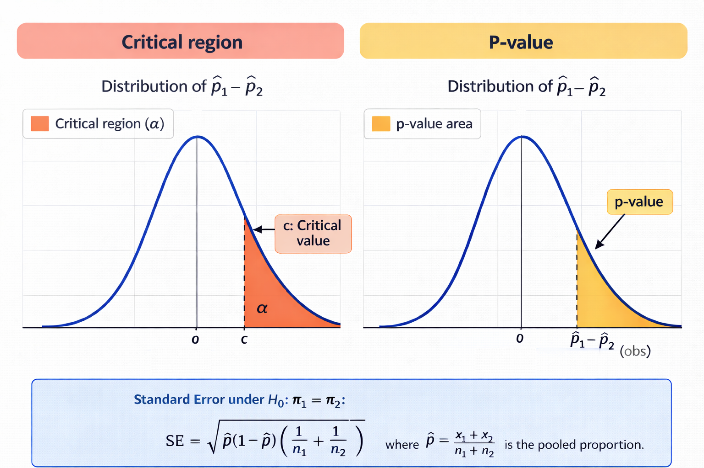
Example 7.44 (Schema-Based Instruction: Hypothesis Test) For the schema-based instruction study, we want to test whether the new approach improves mastery. Recall:
- \(n_1 = 50\), \(X_1 = 34\), \(\hat{p}_1 = 0.68\)
- \(n_2 = 50\), \(X_2 = 24\), \(\hat{p}_2 = 0.48\)
- \(\hat{p}_1 - \hat{p}_2 = 0.20\)
- \(\hat{p} = 0.58\)
Hypotheses: \[ \begin{cases} H_0: p_1 - p_2 \leq 0\\ H_a: p_1 - p_2 > 0 \end{cases} \]
Using \(\alpha = 0.05\), test these hypotheses using both the critical region and p-value approaches.
🔎 Solution
Critical Region Approach:
Click to expand the box below to see how to use the Proportion Inference function in Rguroo to answer this question.
Open the Analytics toolbox in Rguroo.
From the Analysis dropdown, select Proportion Inference → Two Populations. This opens the Two Population Proportion Inference dialog.
In the Response/Success section of the dialog, enter the following:
- In the Response Label textbox, type a label for the response variable. For this example, enter Improve Mastery.
- In the Success Label textbox, type Yes. A success corresponds to a student improving mastery.
- In the Failure Label textbox, type No.
In the Population section of the dialog, enter the following:
- In the Population textbox, enter a label for the population. In this example we enter Seventh Graders.
In the Data Summary tab enter data information for populations 1 and 2.
- In the Population 1 section enter the following:
- Label: New
- Sample Size: 50
- [# of Successes]: 34
- In the Population 2 section enter the following:
- Label: Traditional
- Sample Size: 50
- [# of Successes]: 24
- In the Population 1 section enter the following:
Click on the Test of Hypothesis tab and specify the following:
- From the dropdown next to Alternative Hypothesis p1 - p2 select >, the greater than sign, and in the corresponding textbox type in 0.
- For Significance Level type in 0.05. This is the default value.
- In the Methods section, select the checkbox Large Sample z
To obtain both critical region and \(p\)-value results, click the button to open the Advanced Features dialog.
- In the Test of Hypothesis Graphs section, select both P-Value Graph and Critical Region Graph. The default is P-Value Graph; selecting Critical Region Graph will also display the critical region.
Click the preview icon
to view the output.Click the
button and save the result as SchemaProp2.
Rguroo Two-Population Proportion dialogs for the Schema-Based Instruction example
![Screenshot of a Two Population Proportion Inference interface showing setup and analysis for comparing two proportions. The top panel includes fields for selecting a dataset, defining the response variable (Improves Mastery), and specifying success (Yes) and failure (No). The population is set to Seventh Graders. In the data summary section, Population 1 (new) has sample size 50 with 34 successes (proportion 0.68), and Population 2 (Traditional) has sample size 50 with 24 successes (proportion 0.48). The lower panel shows hypothesis test settings with alternative hypothesis p_1 - p_2 > 0, significance level 0.05, and method set to Large Sample z. A side panel labeled Advanced Features includes options for displaying p-value and critical region graphs, selecting confidence interval and test methods, and setting simulation parameters (replications and seed).](Rguroo_dialogs/Proportion_inference/prop2-schema-dialog.png)
Click to expand the box below to see the Rguroo output.
Rguroo output: Two-Population Proportion Inference - Schema-Based Instruction
To carry out both the critical region and \(p\)-value approaches, we first describe the null distribution. As discussed in Section 7.8.2, assuming \(p_1 = p_2\), the statistic \(\hat{p}_1 - \hat{p}_2\) is approximately normally distributed with mean 0 and standard error 0.0987. Note that we calculated this standard error (0.0987) in Example 7.43. This null distribution will be used for both approaches below.
Critical Region Approach:
Let \(c\) denote the critical value that cuts off the upper 5% of this distribution. Then \[ P(\hat{p}_1 - \hat{p}_2 \geq c \mid p_1 = p_2) = 0.05. \]
From the Rguroo output graph labeled Critical Region Graph: Large Sample z, Pooled SE (shown in Figure 7.30), the value of this cutoff is calculated as \(c = 0.16237\), displayed at the bottom of the left panel (labeled “Observed Data Scale”).
![Two side-by-side normal curves illustrating a right-tailed critical region test. The left panel (Observed Data Scale) shows the sampling distribution of the proportion difference with the critical value marked at 0.16237 and the observed difference at 0.2, both indicated by markers. The right-tail rejection region beyond the critical value is shaded red. The right panel shows the same test on the Standard Normal (z) Scale. In both panels, the observed value (green triangle) falls within the red rejection region.](Rguroo_outputs/Proportion_Inference/G_crTestSchema.png)
Since the observed difference \(\hat{p}_1 - \hat{p}_2 = 0.20 > 0.16237\), the observed difference falls in the critical region (shown by the green triangle in the red rejection region). Therefore, we reject \(H_0\) at the 0.05 significance level and conclude that there is sufficient evidence to support \(H_a: p_1 - p_2 > 0\).
P-Value Approach:
The \(p\)-value measures the strength of evidence the data provide against \(H_0\) and in favor of \(H_a: p_1 - p_2 > 0\). It is the probability of observing a difference at least as large as the observed difference of 0.20, assuming \(p_1 = p_2\): \[ \text{p-value} = P(\hat{p}_1 - \hat{p}_2 \geq 0.20 \mid p_1 = p_2). \]
This probability is depicted in the Rguroo output graph labeled P-Value Graph: Large Sample z, Pooled SE (shown in Figure 7.31). In the left panel (labeled “Observed Data Scale”), the area corresponding to the \(p\)-value is shaded in red, and its value is 0.021377. This value is also reported in the results table.

Since the \(p\)-value \(= 0.021 < 0.05\), we reject \(H_0\) at the 0.05 significance level and conclude that there is sufficient evidence to support \(H_a: p_1 - p_2 > 0\).
Conclusion:
Both approaches lead to the same decision. The data provide strong evidence that the new instructional approach improves mastery rates. The observed 20 percentage point difference strongly supports the claim that \(p_1 > p_2\).
7.8.3.2 Case 2: Left-Tailed Test (\(H_a: p_1 - p_2 < 0\))
In this case, we want to test whether \(p_1 < p_2\). The alternative hypothesis \(H_a: p_1 - p_2 < 0\) is supported when \(\hat{p}_1 - \hat{p}_2\) is sufficiently negative. Values of \(\hat{p}_1 - \hat{p}_2\) that are large and negative provide strong support for \(H_a\), while values near zero or positive provide little to no support for \(H_a\).
Critical Region Approach:
The critical region consists of values in the lower tail of the sampling distribution—these are the values that strongly support \(H_a: p_1 - p_2 < 0\). We find the critical value \(c\) such that at the boundary where \(p_1 = p_2\):
\[P(\hat{p}_1 - \hat{p}_2 < c \mid p_1 = p_2) = \alpha\]
Using the sampling distribution at the boundary, we find \(c\) from \(N\left(0, \sqrt{\hat{p}(1-\hat{p})\left(\frac{1}{n_1} + \frac{1}{n_2}\right)}\right)\) such that the area to the left equals \(\alpha\).
Decision Rule: - Reject \(H_0\) if \(\hat{p}_1 - \hat{p}_2 < c\) (observed difference strongly supports \(H_a\)) - Fail to reject \(H_0\) if \(\hat{p}_1 - \hat{p}_2 \geq c\) (observed difference does not strongly support \(H_a\))
P-Value Approach:
The p-value measures how much support the data provide for \(H_a\). For a left-tailed test, the p-value is the probability of observing a difference that provides at least as much support for \(H_a\) as our observed difference, assuming we’re at the boundary of \(H_0\):
\[\text{p-value} = P(\hat{p}_1 - \hat{p}_2 \leq \text{observed difference} \mid p_1 = p_2)\]
This is the area to the left of the observed difference in the \(N\left(0, \sqrt{\hat{p}(1-\hat{p})\left(\frac{1}{n_1} + \frac{1}{n_2}\right)}\right)\) distribution. A small p-value indicates strong support for \(H_a\), while a large p-value indicates weak support for \(H_a\).
Decision Rule: - Reject \(H_0\) if p-value \(< \alpha\) (data strongly support \(H_a\)) - Fail to reject \(H_0\) if p-value \(\geq \alpha\) (data do not strongly support \(H_a\))
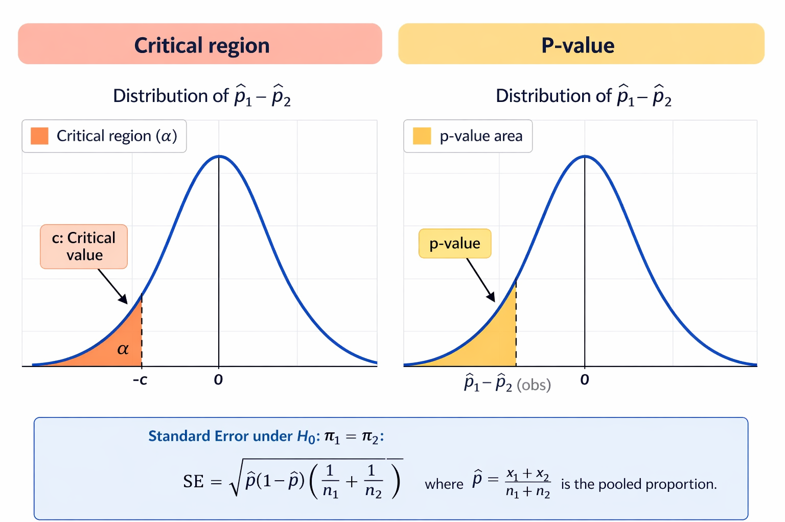
Example 7.45 (Smoking Cessation: Hypothesis Test) For the smoking cessation study, we want to test whether the self-guided approach is more effective. Recall:
- \(n_1 = 60\), \(X_1 = 24\), \(\hat{p}_1 = 0.40\)
- \(n_2 = 60\), \(X_2 = 15\), \(\hat{p}_2 = 0.25\)
- \(\hat{p}_1 - \hat{p}_2 = 0.15\)
- \(\hat{p} = 0.325\), \(\widehat{\text{S.E.}}(\hat{p}_1 - \hat{p}_2) = 0.0855\)
Hypotheses: \[ \begin{cases} H_0: p_1 - p_2 \geq 0\\ H_a: p_1 - p_2 < 0 \end{cases} \]
Using \(\alpha = 0.05\), test these hypotheses using both the critical region and p-value approaches.
7.8.3.3 Case 3: Two-Tailed Test (\(H_a: p_1 - p_2 \neq 0\))
In this case, we want to test whether \(p_1 \neq p_2\). The alternative hypothesis \(H_a: p_1 - p_2 \neq 0\) is supported when \(\hat{p}_1 - \hat{p}_2\) is far from zero in either direction. Values of \(\hat{p}_1 - \hat{p}_2\) that are either large and positive or large and negative provide strong support for \(H_a\), while values near zero provide little support for \(H_a\).
Critical Region Approach:
The critical region consists of values in both tails of the sampling distribution—these are the values that strongly support \(H_a: p_1 - p_2 \neq 0\). We find two critical values, \(c_L\) and \(c_U\), such that at the boundary where \(p_1 = p_2\):
\[P(\hat{p}_1 - \hat{p}_2 < c_L \text{ or } \hat{p}_1 - \hat{p}_2 > c_U \mid p_1 = p_2) = \alpha\]
We split \(\alpha\) equally between the two tails (\(\alpha/2\) in each tail). Using the sampling distribution at the boundary:
- \(c_L\) is the value with area \(\alpha/2\) to its left
- \(c_U\) is the value with area \(\alpha/2\) to its right
Decision Rule: - Reject \(H_0\) if \(\hat{p}_1 - \hat{p}_2 < c_L\) or \(\hat{p}_1 - \hat{p}_2 > c_U\) (observed difference strongly supports \(H_a\)) - Fail to reject \(H_0\) if \(c_L \leq \hat{p}_1 - \hat{p}_2 \leq c_U\) (observed difference does not strongly support \(H_a\))
P-Value Approach:
The p-value measures how much support the data provide for \(H_a\). For a two-tailed test, the p-value is the probability of observing a difference that provides at least as much support for \(H_a\) as our observed difference, assuming we’re at the boundary of \(H_0\). Since \(H_a\) is supported by differences far from zero in either direction, we compute:
\[\text{p-value} = P(|\hat{p}_1 - \hat{p}_2| \geq |\text{observed difference}| \mid p_1 = p_2)\]
This is the sum of areas in both tails beyond the observed difference (in absolute value) in the \(N\left(0, \sqrt{\hat{p}(1-\hat{p})\left(\frac{1}{n_1} + \frac{1}{n_2}\right)}\right)\) distribution. A small p-value indicates strong support for \(H_a\), while a large p-value indicates weak support for \(H_a\).
Decision Rule: - Reject \(H_0\) if p-value \(< \alpha\) (data strongly support \(H_a\)) - Fail to reject \(H_0\) if p-value \(\geq \alpha\) (data do not strongly support \(H_a\))
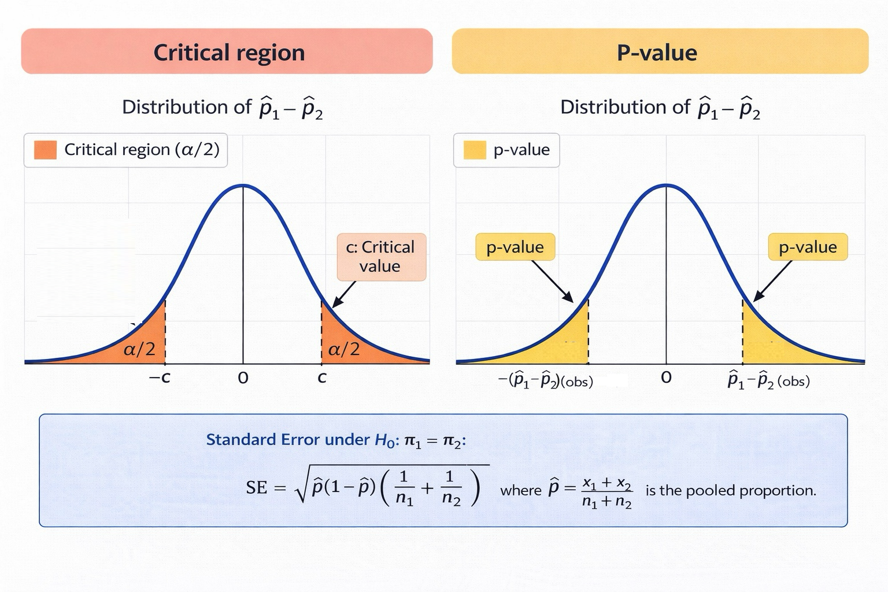
Example 7.46 (Text Message Reminders: Hypothesis Test) For the text message reminder study, we want to test whether adherence rates differ. Recall:
- \(n_1 = 40\), \(X_1 = 32\), \(\hat{p}_1 = 0.80\)
- \(n_2 = 50\), \(X_2 = 28\), \(\hat{p}_2 = 0.56\)
- \(\hat{p}_1 - \hat{p}_2 = 0.24\)
- \(\hat{p} = 0.667\), \(\widehat{\text{S.E.}}(\hat{p}_1 - \hat{p}_2) = 0.0999\)
Hypotheses: \[ \begin{cases} H_0: p_1 - p_2 = 0\\ H_a: p_1 - p_2 \neq 0 \end{cases} \]
Using \(\alpha = 0.05\), test these hypotheses using both the critical region and p-value approaches.
Example 7.47 (GSS 2024: Hypothesis Test) For the GSS marijuana legalization study, we want to test whether support rates differ by gender. Recall:
- \(n_1 = 204\) (females), \(X_1 = 142\), \(\hat{p}_1 = 0.696\)
- \(n_2 = 184\) (males), \(X_2 = 140\), \(\hat{p}_2 = 0.761\)
- \(\hat{p}_1 - \hat{p}_2 = -0.065\)
- \(\hat{p} = 0.727\), \(\widehat{\text{S.E.}}(\hat{p}_1 - \hat{p}_2) = 0.0453\)
Hypotheses: \[ \begin{cases} H_0: p_1 - p_2 = 0\\ H_a: p_1 - p_2 \neq 0 \end{cases} \]
Using \(\alpha = 0.05\), test these hypotheses using both the critical region and p-value approaches.